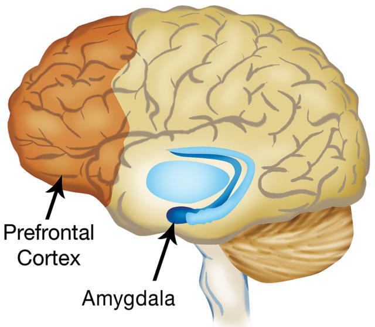
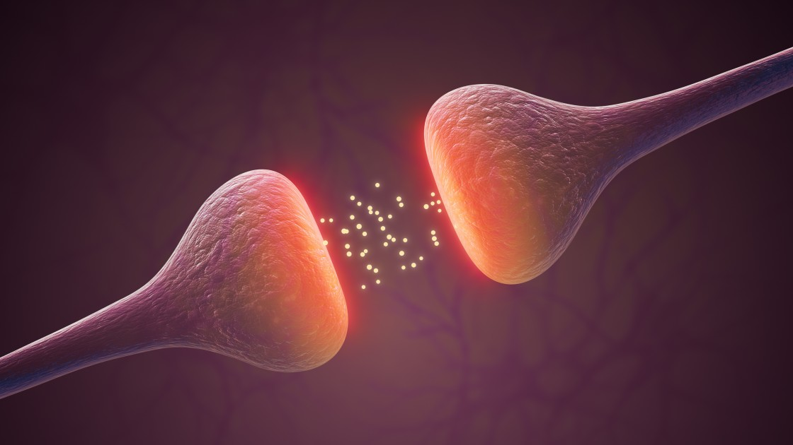
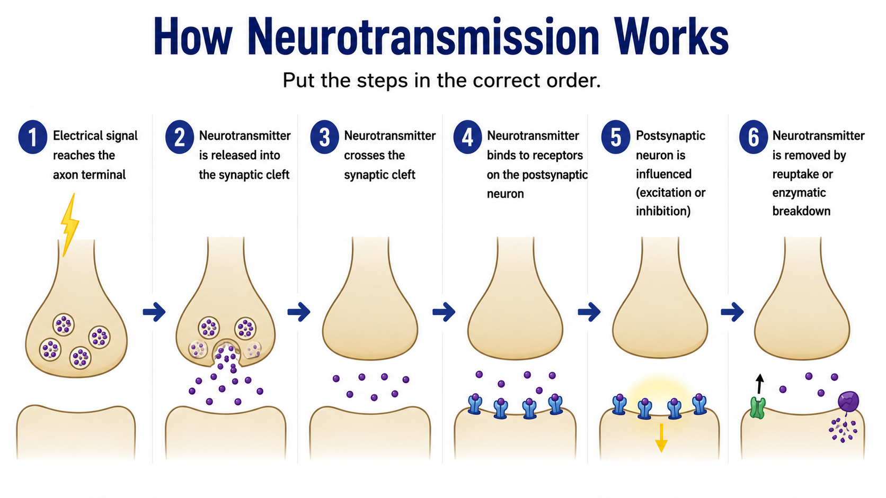
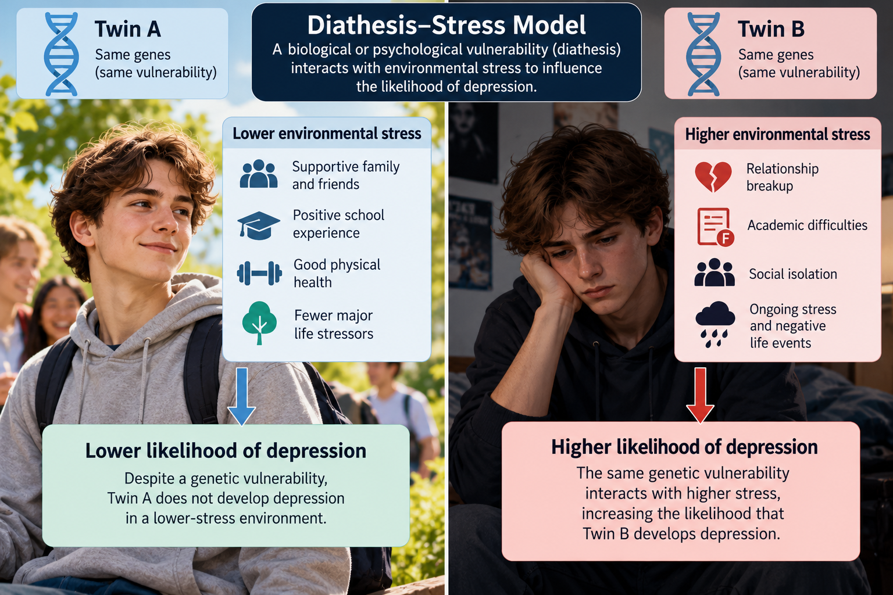
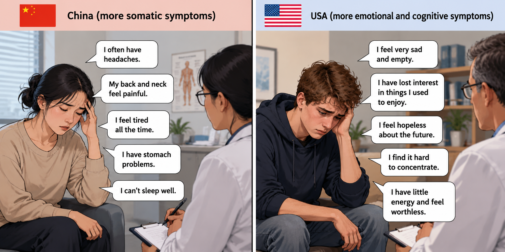

Two health problems will guide this unit: Major Depressive Disorder and problematic social-media use. We will investigate why they develop, how psychologists study them, and what can be done to help.
Maya has been diagnosed with Major Depressive Disorder (MDD). She has experienced persistent low mood, loss of interest in activities she previously enjoyed, difficulty sleeping and problems concentrating. But knowing that Maya has MDD does not explain why she developed it.
What could be contributing to Maya's depression?
Leo spends increasing amounts of time checking social media, including when he intends to study or sleep. He often reaches for his phone when stressed and finds it difficult to reduce his use even when it interferes with other parts of his life. But describing Leo's behavior does not explain why it developed.
What could be contributing to Leo's behavior?
Throughout this unit, our selected mental health disorder is Major Depressive Disorder (MDD). Our selected health problem is problematic social-media use. The IB guide uses social media addiction as one possible health problem. In this course, we will generally use the more cautious term problematic social-media use rather than assuming that every pattern of excessive use should automatically be classified as an addiction.
Some people may have greater biological vulnerability to depression. Psychologists can investigate factors such as genetic vulnerability, brain function and neurotransmission. But finding a biological process associated with depression does not automatically prove that it caused Maya's MDD.
How Maya interprets experiences may also matter. For example, repeatedly interpreting setbacks as evidence that 'nothing will ever improve' could contribute to patterns of thinking associated with depression. Cognitive models such as Beck's attempt to explain this through schemas and automatic thoughts.
Experiences can also contribute to vulnerability. Persistent stress, major negative life events or difficult social circumstances may increase the risk of depression. However, experiencing adversity does not mean that a person will inevitably develop MDD.
Maya's depression does not need to have one single cause. Biological vulnerability, patterns of thinking and environmental experiences may interact.
Leo sees friends and influencers repeatedly checking, posting and receiving attention online. Observing other people being rewarded can make behaviors more likely to be copied, while likes, replies and other responses may reinforce Leo's own behavior. Social Learning Theory examines exactly this process: learning by observing rewarded behavior.
Leo often checks social media when he feels stressed. If scrolling temporarily reduces unpleasant feelings, using social media may become a coping response that is repeated. This creates an important question: does stress contribute to problematic use, can problematic use contribute to stress, or can both occur?
Leo's behavior also occurs within a social environment. Peer expectations, constant access to technology and patterns of online interaction may influence when and how often he uses social media. The behavior therefore cannot be understood only by looking at Leo as an isolated individual.
Problematic social-media use can also have multiple influences. Social learning, stress and the wider social environment may interact.
Their problems are different, but psychologists can ask similar questions.
For both Maya and Leo, we can ask:
This is why Health & Well-being is not simply a list of disorders, theories and treatments.
Psychologists are trying to explain health outcomes using evidence.
Psychologists are also interested in how common health problems are.
But prevalence becomes psychologically interesting when we ask why rates change or differ.
For example:
What might explain an increase in recorded problematic social-media use over time?
Why might recorded rates of depression differ between populations?
Possible explanations could involve genuine differences in risk or exposure, but psychologists must also consider measurement, diagnosis, access to healthcare, reporting and cultural context.
A prevalence difference is therefore something to explain — not an explanation by itself.
If psychologists understand processes contributing to a health problem, they can ask whether changing those processes may help.
For MDD, we will examine both biological treatment and psychological treatment.
For problematic social-media use, we will examine strategies designed to reduce problematic behavior.
But an intervention sounding reasonable does not prove that it works.
We must ask:
This is why the unit examines both the explanation and the effectiveness of treatment and prevention.
We will investigate:
We will investigate:
We will investigate:
How can psychology explain, measure and improve health and well-being?
Every theory, study and intervention in this unit helps us answer part of that question.
What MDD is, why it matters, and why it is more than ordinary sadness.
Major Depressive Disorder (MDD) is a clinical condition characterised by persistent low mood and/or loss of interest or pleasure (anhedonia) that interferes with daily functioning.
A diagnosis requires five or more symptoms during the same two-week period, including either depressed mood or loss of interest/pleasure, and the symptoms must cause significant distress or difficulty in everyday functioning.
Sadness is a normal human emotion, whereas MDD is a disorder involving a persistent and impairing pattern of symptoms.
River has not seemed like themselves for the past three weeks. They do not necessarily describe themselves as sad. Instead, they say they feel “numb” and that things they used to enjoy—playing basketball, gaming with friends and going out on weekends—do not feel enjoyable anymore. They have stopped joining their friends after school and spend much more time alone.
River is also sleeping badly, feels tired almost every day, has difficulty concentrating in class, and has begun saying that they feel worthless and that they “can’t do anything right.” Their schoolwork is falling behind and they are struggling to manage their normal daily routine.
River is showing several symptoms associated with MDD, including loss of interest or pleasure, sleep disturbance, fatigue, difficulty concentrating, feelings of worthlessness, and clear impairment in everyday functioning. The symptoms have also persisted for more than two weeks and are interfering with daily life.
The important point: depression does not always look like obvious sadness. For some people, a major feature is anhedonia—a loss of interest or pleasure in things that previously mattered to them—which may be experienced as emptiness or emotional numbness.
People diagnosed with the same disorder may show very different symptom profiles. Recognizing symptoms helps us identify MDD, but psychologists also want to understand the mechanisms that may explain why depression develops and persists.
Sort each characteristic into the correct category.
How depression is identified and measured — and the challenges psychologists face when turning symptoms into data and diagnoses.
Depression cannot be measured directly like height or temperature. Psychologists and clinicians therefore measure indicators of depression, such as reported symptoms, how frequently they occur, their severity, and their effect on everyday functioning.
IB Connection — Measurement
Measurement is the process of turning a psychological construct into something that can be recorded or quantified.
Major Depressive Disorder (MDD) is identified through clinical assessment. There is currently no single biological test that can diagnose MDD.
A clinician talks with the individual about their symptoms, how long they have lasted, their severity, their impact on everyday functioning, previous episodes, and other relevant information.
Clinicians use standardized diagnostic systems to guide their assessment:
These systems provide standardized criteria that clinicians can use when assessing whether a person's symptoms fit a recognized disorder such as MDD.
Self-report measures ask people standardized questions about their own symptoms. Their responses can then be recorded and scored. Two widely used measures are the Patient Health Questionnaire-9 (PHQ-9) and the Beck Depression Inventory-II (BDI-II).
Clinicians also consider:
MEASUREMENT ≠ DIAGNOSIS
A questionnaire can measure reported depressive symptoms and contribute evidence to an assessment. A questionnaire score by itself is not the same thing as a clinical diagnosis.
The PHQ-9 is a real psychological questionnaire. Explore how its questions and response scale turn reported experiences into numerical data. The purpose here is to understand psychological measurement, not to diagnose yourself or anyone else.
The BDI-II uses a different approach from the PHQ-9. Instead of asking about frequency, each item presents four statements representing increasing levels of symptom severity. Select the statement that best describes how you have been feeling during the last two weeks, including today.
Commit to an answer before revealing the explanation.
SAME SCORE ≠ SAME SYMPTOM PROFILE
SAME SCORE ≠ SAME CAUSE
SAME SCORE ≠ SAME TREATMENT NEEDS
IB Connection — Measurement & Individual Differences
The same measurement output can result from different combinations of reported symptoms. Measurement records an indirect indicator, and individual differences mean identical scores do not necessarily imply identical symptom profiles, causes or treatment needs.
Reliability asks whether psychological measurement produces reasonably consistent results.
Consider this question: If the same person were assessed again, or if different clinicians assessed the same person, would the result be similar?
Researchers wanted to see whether people would receive the same MDD diagnosis when assessed again.
MDD received a kappa score of about 0.28, which is considered low.
In simple terms: the diagnoses were not very consistent. A person might receive an MDD diagnosis in one assessment but not receive the same diagnosis when assessed again.
This suggests that diagnosing MDD may not always be very reliable.
Important: A kappa of 0.28 does not mean that clinicians agreed only 28% of the time.
For now, remember:
Low kappa score = low consistency = lower reliability.
This provides evidence that standardized diagnostic criteria do not guarantee perfect agreement between assessments. Reliability can also depend on the assessment procedure, sample, clinicians and context.
STANDARDIZATION → can improve consistency
STANDARDIZATION ≠ perfect reliability
IB Connection — Reliability
Reliability concerns the consistency of psychological measurement or diagnosis.
Validity asks whether the interpretation made from a psychological measure or diagnosis is justified — particularly whether it adequately represents the construct it is intended to assess. Keeping “accuracy” in mind is fine as a simple memory aid, but HL answers need this fuller definition.
A questionnaire may reliably produce a score, but researchers must still ask whether that score validly represents the depressive symptoms or construct they want to measure.
Imagine someone reports sleep problems, exhaustion, difficulty concentrating, and appetite changes. A depression questionnaire produces a high symptom score. Does this automatically prove that depression is causing those symptoms?
Reliability
Is the measurement reasonably consistent?
Validity
Does the evidence justify the interpretation we are making from the measurement?
Standardized criteria and questionnaires can reduce subjectivity, but they cannot automatically eliminate bias.
People from different cultural backgrounds may describe, interpret, or express psychological distress differently. This can influence whether symptoms are recognized as depression.
Social expectations surrounding gender may influence how symptoms are reported or interpreted.
A clinician's assumptions or expectations can potentially influence how information is interpreted.
Standardization can reduce subjectivity, but symptoms still have to be reported and interpreted by people. Psychological measurement and diagnosis can therefore still be influenced by context and bias.
IB Connection — Bias
Bias refers to systematic distortion that can affect how research is conducted, interpreted, or applied.
Identify problems in how depression is diagnosed.
How genes, brain processes, and chemical messengers may increase vulnerability to depression.
Biological explanations examine how genetic inheritance, brain processes and chemical messengers may contribute to vulnerability to Major Depressive Disorder (MDD). Importantly, biological factors may increase risk or vulnerability — they do not mean that depression is biologically predetermined. Keep this distinction in mind as you work through the evidence.
Depression can run in families, which suggests that genetic differences may contribute to a person’s vulnerability to developing MDD.
This does not mean that there is a single ‘depression gene.’ Depression is polygenic: many genes may each make a small contribution to vulnerability. A person may therefore inherit a greater or lower susceptibility to depression rather than inheriting depression itself.
Genes also do not act independently of experience. Two people with similar genetic vulnerability can have different outcomes because their environments, experiences and other biological factors differ.
Imagine that depression has occurred several times in Noah’s family. His mother and grandfather have both experienced MDD.
This family history could mean that Noah has inherited some genetic vulnerability. But it does not mean that Noah will inevitably develop depression.
Noah’s outcome may also depend on factors such as stressful life events, relationships, social support and other biological differences. Genetic vulnerability changes probability; it does not determine a person’s future.
Because depression is polygenic, psychologists should not expect to find one gene that explains whether someone develops MDD.
Instead, many genetic differences may contribute small amounts of vulnerability. Genetic explanations therefore describe differences in risk, not a simple gene-to-disorder pathway.
McGuffin and colleagues compared depression concordance in identical (monozygotic or MZ) twins and non-identical (dizygotic or DZ) twins.
MZ twins share almost all of their genes, while DZ twins share roughly half of their segregating genes on average.
The researchers reported probandwise concordance of approximately 46% for MZ twins and 20% for DZ twins.
The higher concordance among MZ twins is consistent with genetic differences contributing to vulnerability to depression.
The most important comparison is that concordance was higher for MZ twins than DZ twins.
Because MZ twins are more genetically similar, this pattern is consistent with a genetic contribution to depression.
But notice something equally important: MZ concordance was about 46%, not close to 100%.
If genes completely determined whether someone developed depression, we would expect identical twins to show much greater similarity. The fact that many identical twin pairs differed shows that genes are not sufficient by themselves.
Twin studies cannot perfectly separate genes from environment. Identical twins may experience more similar environments than non-identical twins, so greater MZ concordance cannot automatically be attributed entirely to genetics.
The evidence therefore supports genetic influence, but it does not tell us that genes alone caused the difference.
Decide what each claim is allowed to conclude. No peeking back until you have committed to an answer.
Researchers have found differences in the activity and functioning of several brain regions in people experiencing depression.
Two useful examples are the prefrontal cortex and the amygdala.
These findings can help psychologists understand biological processes associated with depressive symptoms. However, finding a brain difference does not automatically tell us whether that difference caused the depression, resulted from it, or developed through an interaction with other factors.

Two brain areas commonly discussed in research on depression: the prefrontal cortex and amygdala.
The prefrontal cortex is involved in processes such as planning, decision-making, attention and regulating thoughts and emotions.
Differences in prefrontal functioning have been associated with depression. This could help explain why some people with MDD experience difficulties such as persistent negative thinking, poor concentration or difficulty regulating emotional responses.
For example, imagine someone receives one piece of criticism at work and then spends the entire evening repeatedly thinking, ‘I’m useless. I always get everything wrong.’ Difficulties in the systems involved in regulating attention and thought may contribute to why negative information becomes difficult to disengage from.
This does not mean that the prefrontal cortex contains a ‘depression center.’ It is one part of a much larger network.
The amygdala is involved in detecting and processing emotionally important information, particularly information related to threat and negative emotion.
Research has associated depression with differences in amygdala responses to emotional information. This may help explain why some people with depression show increased sensitivity to negative emotional cues.
For example, someone with depression might receive nine positive comments and one critical comment but find that the criticism captures their attention and produces a particularly strong emotional response.
The amygdala does not simply ‘create negative emotion,’ and depression cannot be reduced to an overactive amygdala. Its activity is part of interacting brain systems.
The prefrontal cortex and amygdala interact with wider brain networks.
It can therefore be useful to think about depression in terms of systems involved in processing emotional information and regulating thought and attention, rather than imagining that one brain region causes the disorder.
Brain findings provide evidence about biological processes associated with depression, but they need to be interpreted alongside cognitive, environmental and genetic evidence.
For each claim, choose the conclusion the evidence actually licenses.

Neurotransmitters are chemical messengers that allow neurons to communicate across synapses.
Neurotransmitters are chemical messengers that neurons use to communicate. When a neuron fires, it releases neurotransmitter molecules into the small gap between neurons, called the synapse. The neurotransmitter crosses the synapse and binds to receptors on another neuron, influencing its activity. Some neurotransmitter molecules are then taken back into the neuron that released them — a process called reuptake.
Neuron releases neurotransmitter
↓
Neurotransmitter crosses the synapse
↓
Binds to receptors
↓
Influences the next neuron
↓
Some is taken back up (reuptake)
One neurotransmitter that has been extensively investigated in relation to depression is serotonin (5-hydroxytryptamine, 5-HT). Serotonin signaling is involved in several functions relevant to Major Depressive Disorder (MDD), including mood-related processing, sleep, and appetite — all commonly disrupted in depression.
Serotonin affects brain areas involved in emotion. Increased serotonin signaling can reduce the amygdala’s response to negative or threatening information, reducing negative emotional reactions. For example, if a student receives criticism from a teacher, they may experience a less intense emotional reaction rather than immediately feeling extremely upset or threatened.
Serotonin also influences activity in the prefrontal cortex, a region involved in regulating thoughts and emotional responses. For example, after receiving that criticism, the student may be better able to control their emotional response, think about the feedback calmly and shift their attention back to their work rather than continuing to focus on the negative comment.
Researchers proposed that reduced activity in monoamine neurotransmitter systems, particularly serotonin, might contribute to depressive symptoms. Monoamines are a group of neurotransmitters that includes serotonin, noradrenaline (norepinephrine), and dopamine. This idea developed into the monoamine hypothesis of depression, one of the most influential biological explanations for MDD.
The monoamine hypothesis was later simplified in popular accounts into the idea that depression is caused by a “chemical imbalance” — specifically, having “too little serotonin.” However, depression cannot accurately be explained as simply having low serotonin. Current evidence suggests MDD involves much more complex interactions among neurotransmitter systems, neural circuits, genetics, cognition, and environmental experiences.
A useful way to hold this together:
Neurotransmitter system → communication between neurons → functioning of neural networks → psychological processes and behavior → possible contribution to depressive symptoms
This is a proposed contribution, not a proven single causal pathway. An association does not establish causation, and no single neurotransmitter explains MDD on its own.
Explaining MDD entirely through genes, brain activity, or neurotransmitters would be reductionist — reducing a complex disorder to simpler processes while overlooking other important influences. Because MDD is influenced by interacting biological, cognitive, social, cultural and environmental factors, a purely biological explanation may identify important mechanisms but neglect other levels of explanation.
Genetic evidence: McGuffin et al. (1996) supports genetic vulnerability because MZ concordance was higher than DZ concordance. However, MZ concordance was only about 46%, not 100%, showing that genetic similarity alone cannot determine who develops MDD.
Brain-imaging evidence: Research can identify brain differences associated with MDD, but cannot by itself establish whether those differences caused depression or resulted from it.
Neurotransmitter evidence: Neurotransmitter systems are biologically relevant, but the simple claim that MDD is caused by a single chemical imbalance is inadequate.
Evidence from beyond biology: Stressful life experiences, cognitive processes, and cultural and environmental differences provide additional evidence that a complete explanation cannot rely on biology alone. The effectiveness of psychological treatments such as Cognitive Behavioral Therapy (CBT) in reducing depressive symptoms also supports explanations beyond a purely biological account.
This raises the next question: what happens when a vulnerability interacts with stressful life experiences?
Vulnerability to depression can interact with stressful environmental experiences — the Diathesis–Stress Model explains how.
Evaluate the evidence for biological explanations of depression.
How vulnerability and environment interact to influence mental health.
Think about two students who both fail an exam. One brushes it off and retakes it. The other feels crushed and can't stop thinking about it. The event was the same — so why the different reactions? Think about this before we explore the model.
The Diathesis–Stress Model proposes that psychological outcomes become more likely when an underlying vulnerability (diathesis) interacts with environmental stress.
Vulnerability + Stress → Increased probability of MDD
Consider two students who experience similar stressful events — a breakup, exam pressure, and loneliness at university. Their risk differs because their underlying vulnerability differs. Vulnerability (diathesis) can be genetic or biological (for example, inherited tendencies), cognitive (for example, negative thinking patterns or rumination), or developmental (for example, early experiences). A family history of depression is one possible source of vulnerability, but it is not the only one — having a family history does not guarantee a high diathesis, and having no family history does not mean having no vulnerability. According to the model, it is the combination of vulnerability and stress that increases the probability of MDD rather than guaranteeing it.
Rumination is repeatedly thinking about negative experiences, feelings or problems without successfully moving on from them or solving them.
Imagine a student receives a poor test result. Instead of thinking, “I need to prepare differently next time,” they spend the evening repeatedly thinking, “Why did I fail? Why am I so bad at this? What if I fail again?” The test is over, but their attention keeps returning to the negative experience.
When someone ruminates, negative information can remain emotionally important even after the original event has ended. The amygdala, which responds to emotionally significant information, may contribute to the negative experience continuing to capture attention. At the same time, the prefrontal cortex is involved in controlling attention and regulating emotional responses. Difficulty disengaging from negative information may therefore make it harder to redirect attention towards something else.
The default mode network (DMN) is a network of brain regions particularly involved when our attention turns inward, such as when we think about ourselves, remember past experiences or imagine the future. During rumination, this internally focused thinking can become repetitive. The student may keep replaying the test result and thinking about what it means about them rather than shifting attention towards what they can do next.
This helps us understand why rumination can act as a cognitive vulnerability. Repeatedly returning to negative information may help maintain negative mood, particularly when combined with stressful experiences.
Adjust the sliders to explore how vulnerability and stress interact to influence risk. This is a conceptual model — it does not calculate an individual's actual chance of depression.
Relative risk of developing MDD:
Lower
Imagine two students, Leo and Marcus, both experience the breakup of a long-term relationship.
Leo has a stronger underlying vulnerability to depression, while Marcus has lower vulnerability.
The same stressful event could therefore affect them differently. Leo might develop a depressive episode while Marcus experiences temporary sadness and gradually recovers.
The model does not claim that vulnerability automatically produces depression or that a stressful event automatically produces depression. It focuses on how vulnerability and experience can interact.
Both people have similar vulnerability: moderate family history of depression and a tendency toward negative thinking.
Think about it: Two colleagues with similar personalities and family backgrounds. One goes through a busy but manageable term at work. The other loses a parent, separates from their partner, and faces redundancy in the same year. The vulnerability is similar — the difference is the level of stress they face.
Case: Sarah is 19 years old. Her mother and aunt have both been diagnosed with depression. Sarah has always tended to worry excessively and interpret ambiguous events negatively. Last month, her close friendship group dissolved after a conflict, and she has been spending most of her time alone. She has also been sleeping poorly and finding it difficult to concentrate on her university work. Sarah plays football twice a week.
Protective factors are influences that may reduce the impact of vulnerability and stress, lowering the probability of MDD. Examples include:
Protective factors reduce risk rather than guaranteeing protection.
Real-life example: A teenager with a family history of depression loses a grandparent. Their risk might be lowered by close friendships, a trusted teacher they can talk to, involvement in a sports team, and a sense that things will eventually feel normal again. These protective factors do not remove the vulnerability or the loss, but they provide a buffer.
A strength is that the model offers a probabilistic rather than deterministic account — an underlying vulnerability does not guarantee MDD, and whether it does depends on interacting influences rather than any single requirement. This is consistent with the ~46% MZ concordance found by McGuffin et al. (1996), a multifactorial, non-deterministic pattern; however, the twin study does not directly demonstrate the Diathesis–Stress Model itself.
A strength is that it integrates biological, psychological, and environmental factors rather than relying on a single explanation, making it a more comprehensive account of MDD than purely biological or purely psychological models.
A strength is that it has practical applications — if we can identify vulnerability factors and stress triggers, we can target prevention and early intervention at high-risk individuals.
One limitation is that it can be difficult to measure and operationalise “vulnerability” and “stress” precisely, making the model hard to test empirically. How do you quantify “vulnerability” on a continuous scale?
One limitation is that the model does not specify exactly how much stress, or what kind of vulnerability, is needed — it is more of a conceptual framework than a precise predictive tool.
One limitation is that it may underestimate the role of protective factors and resilience — some people with high vulnerability and high stress do not develop MDD, suggesting additional factors are at play.
Case: Tom has a family history of depression and has always been a perfectionist who sets unrealistically high standards. After losing his job, he has been unable to find new employment for three months. He has withdrawn from friends and feels hopeless about the future.
Real-life parallel: Many people experience job loss without developing MDD, but Tom's pre-existing vulnerability (family history + perfectionism) makes him more susceptible. The sustained unemployment and social withdrawal represent ongoing stress, not a single event.
Using the Diathesis–Stress Model, explain Tom's situation. Use the terms diathesis, stress, interaction, vulnerability, and probability.
Use the diathesis-stress model to explain each scenario.
How neurons communicate chemically, and what we can and cannot conclude about serotonin and depression.
Drag the steps into the correct order, then check your answer.

Serotonin is a neurotransmitter, meaning it is one of the chemical messengers neurons use to communicate. Serotonin signaling is involved in a wide range of functions, including mood, sleep, appetite and aspects of emotional processing. This is one reason psychologists have been interested in its possible relationship with depression.
When a neuron releases serotonin, it enters the tiny gap between neurons called the synapse. Some of the serotonin binds to receptors on the receiving neuron, influencing its activity. Serotonin does not simply remain in the synapse indefinitely: some is taken back into the neuron that released it through a process called reuptake.
This gives us the basic process we need to understand the debate about depression. If serotonin is involved in functions that are often disrupted in MDD, such as mood, sleep and appetite, could differences in serotonin signaling contribute to depression?
That is a reasonable hypothesis. But there is an important difference between saying that serotonin may be involved in depression and saying that depression is caused by having too little serotonin. The second claim is much stronger and requires much stronger evidence.
The simple serotonin hypothesis proposed that depression results from abnormally low serotonin activity. In other words, low serotonin was not merely associated with depression; it was proposed as part of its cause.
That gives psychologists something they can test. If low serotonin were a general cause of depression, we would expect people with depression to consistently show evidence of reduced serotonin functioning. We might also expect experimentally reducing serotonin availability to increase the likelihood of depressive symptoms.
Researchers can therefore ask whether these predictions are actually supported by the evidence. This is important because showing that serotonin plays a role in mood does not, by itself, show that insufficient serotonin causes MDD.
This question becomes particularly interesting when we consider selective serotonin reuptake inhibitors (SSRIs), a widely used class of antidepressants.
SSRIs reduce the reuptake of serotonin after it has been released. This leaves serotonin available in the synapse for longer and changes serotonin signaling. For some people with depression, treatment with an SSRI reduces their symptoms.
It is tempting to reason backwards from this and say: if increasing serotonin helps depression, depression must have been caused by too little serotonin.
But that conclusion does not follow. A treatment can change a biological system and improve a condition without identifying what originally caused the condition. A painkiller can reduce a headache, for example, but that does not mean the headache was caused by a deficiency of painkillers.
SSRIs therefore provide evidence that altering serotonin signaling can influence depressive symptoms. They do not, by themselves, prove that a serotonin deficiency caused those symptoms in the first place.
There is another reason the simple explanation becomes difficult.
SSRIs begin affecting serotonin reuptake relatively quickly, whereas improvement in depressive symptoms, when it occurs, generally develops more slowly. If simply increasing the amount of serotonin available in the synapse directly corrected the underlying problem, we might expect improvement to follow that change much more closely.
The delay suggests that antidepressant effects involve processes occurring after the initial change in serotonin signaling. We do not need to conclude from this that serotonin is unimportant. Rather, it tells us that the explanation “low serotonin caused the depression, and the SSRI simply corrected the shortage” is probably too simple.
This brings us to the evidence for the serotonin hypothesis itself.
In 2022, Moncrieff and colleagues published a major umbrella review examining several areas of research that had been used to investigate the relationship between serotonin and depression. Instead of relying on one experiment, they considered different types of evidence that should help us judge whether the serotonin-deficiency explanation holds up.
For example, researchers have investigated whether people with depression consistently show lower serotonin activity, whether differences in serotonin receptors or transporters are consistently associated with depression, and what happens when serotonin availability is experimentally reduced.
Across these areas, Moncrieff and colleagues concluded that the evidence did not consistently support the idea that depression is caused by abnormally low serotonin.
That finding needs to be interpreted carefully. It does not demonstrate that serotonin has nothing to do with depression. Nor does it demonstrate that SSRIs cannot be effective. Instead, it challenges a much more specific claim: that depression can be explained as a straightforward serotonin deficiency.
This leaves us with a more nuanced biological explanation. Serotonin signaling may be involved in depression and in how antidepressant treatments influence symptoms, but the evidence does not support reducing MDD to a simple chemical shortage.
A researcher claims: “SSRIs increase serotonin and relieve depression. Therefore, depression is caused by low serotonin.” Is this a valid conclusion?
SSRIs block the reuptake transporter. What happens to serotonin in the synaptic cleft?
SSRIs change serotonin reuptake relatively quickly, while improvement in depressive symptoms usually takes longer. Which conclusion is most justified?
Decide whether each piece of evidence supports, challenges, or does not directly establish the claim that “depression is caused by low serotonin.”
Moncrieff et al. (2022) concluded that the evidence they reviewed did not consistently support the claim that depression is caused by low serotonin. Is the following conclusion justified?
“Since low serotonin does not cause depression, SSRIs are useless.”
Order the steps of how neurotransmission works.
Beck’s cognitive model proposes that the way a person interprets experiences can contribute to depression.
Previous experiences may contribute to underlying negative schemas — organized beliefs about ourselves and the world. These schemas can influence how new situations are interpreted and can make negative automatic thoughts more likely.
Imagine Sofia receives a lower grade than she expected on an important test.
Sofia already has a negative schema about herself: she believes that she is not intelligent enough.
Because of this underlying belief, the disappointing grade may trigger an automatic thought such as:
‘I knew it. I’m a failure.’
Another student receiving exactly the same grade might think:
‘I didn’t prepare well enough this time. I need to change how I study.’
The event is the same, but the interpretation is different. Beck’s model focuses on how underlying beliefs can influence the meaning a person gives to experiences.
Beck proposed that depression is often associated with negative thinking in three related areas:
The self: negative beliefs about who I am.
For Sofia:
‘I’m a failure.’
The world: negative beliefs about experiences or the environment around me.
For Sofia:
‘Nothing ever works out for me.’
The future: negative expectations about what will happen next.
For Sofia:
‘I’m never going to succeed.’
These three patterns form the negative cognitive triad.
The important idea is not simply that someone has an occasional negative thought. The model proposes that persistent patterns of negative interpretation can contribute to and maintain depressive symptoms.
If Sofia repeatedly interprets setbacks as evidence that she is worthless, that the world is against her and that her future is hopeless, these interpretations may contribute to persistent low mood, hopelessness and withdrawal.
Withdrawal can also reduce opportunities for positive experiences. For example, if Sofia stops studying, seeing friends or participating in activities because she expects failure, she may experience fewer events that challenge her negative beliefs.
This helps explain how patterns of thinking and behavior may reinforce one another over time.
Beck’s model is valuable because it provides a clear psychological explanation for how patterns of interpretation may contribute to depression.
It can help explain why two people experiencing a similar event may respond differently. The event itself does not automatically determine the emotional outcome; existing beliefs can influence how the event is interpreted.
The model also has practical value. If negative interpretations contribute to depressive symptoms, psychologists can try to identify and change these patterns. This idea helped provide the theoretical basis for cognitive behavioral therapy (CBT).
Research has also found associations between negative thinking patterns and depression, providing support for the idea that cognition is relevant to the disorder.
One limitation is that negative thinking and depression can influence each other.
For example, negative schemas and automatic thoughts may contribute to the development or maintenance of depressive symptoms.
But experiencing depression may also make negative thoughts more frequent.
This makes causality difficult to establish. If negative thinking and depression occur together, we cannot automatically conclude that the thinking caused the disorder.
Beck’s model is therefore useful for understanding an important psychological process involved in depression, but it is not a complete explanation of every case. Biological vulnerability, stressful experiences and other factors may also contribute.
Gotlib and Joormann (2010) reviewed extensive evidence that people with depression show biased attention towards negative stimuli, biased memory for negative events, and difficulty disengaging from negative material, supporting Beck’s claim that biased processing maintains depression.
Rueger and colleagues (2011) found that negative cognitive styles predicted depression in adolescents, supporting the idea that schemas can develop early and predispose individuals to depression when activated by stress.
Complete the key elements of Beck's cognitive model.
Why do some people develop depression after difficult experiences while others do not?

The diathesis-stress model proposes that vulnerability and environmental stress interact to influence depression risk. Even individuals with similar genetic vulnerabilities may experience different outcomes depending on their environments.
Why might losing a job, experiencing financial hardship or becoming socially isolated increase someone's risk of depression? And why do people facing similar circumstances sometimes have very different outcomes?
Environmental explanations examine how life experiences and social circumstances may contribute to Major Depressive Disorder (MDD). Rather than locating the explanation entirely within the individual, they consider the conditions in which people live.
These conditions can increase depression risk, but they do not determine who develops the disorder. To understand their influence, psychologists examine stressful experiences, the processes through which they affect people, and the research evidence connecting them to depression.
Psychologists distinguish between two broad types of stressor.
An acute stressor is a relatively sudden or time-limited event, such as bereavement, relationship breakdown or losing a job.
A chronic stressor is an ongoing difficulty, such as financial insecurity, persistent family conflict or long-term social isolation.
These categories often overlap. A single event can produce consequences that continue long after the event itself. For example, losing a job may initially be an acute stressor. However, financial pressure, uncertainty, disruption to daily routine and reduced contact with colleagues may continue for months.
The psychological impact of stress depends partly on its severity, duration and accumulation. Several overlapping difficulties can place greater demands on a person's coping resources than one isolated event.
Identifying a stressful experience is only the beginning of an explanation. Psychologists also want to understand the processes through which that experience might contribute to depressive symptoms.
Employment provides more than income. It can offer structure, social relationships, rewarding activity, a sense of purpose and some control over everyday life.
Unemployment may disrupt several of these simultaneously. Financial worries can become persistent, daily routines may disappear, and reduced contact with colleagues can increase isolation.
These changes may contribute to low mood, hopelessness and withdrawal, particularly when unemployment continues for a prolonged period.
Financial insecurity can expose people to persistent stress concerning housing, food, bills and other essential needs.
It may also restrict access to healthcare, leisure activities and supportive resources. Someone experiencing prolonged financial pressure may have fewer opportunities for rest, recovery and positive experiences.
The relationship is therefore not simply that having less money produces depression. Economic hardship can create several overlapping conditions that increase psychological vulnerability.
Social relationships provide emotional reassurance, practical assistance and a sense of belonging.
When these relationships are absent or disrupted, people may have fewer opportunities to share difficulties, receive encouragement or participate in rewarding activities.
Isolation can therefore contribute to depressive symptoms through loneliness, reduced support and fewer positive experiences.
Ongoing family conflict, discrimination, unstable housing and other prolonged difficulties can expose individuals to repeated psychological strain.
Unlike a temporary stressful event, chronic adversity may offer little opportunity for recovery. It can also reduce a person's sense of control over their circumstances.
Over time, this sustained pressure may increase vulnerability to depression.
Environmental influences frequently occur together. Consider someone who loses their job. The resulting financial difficulties may create relationship conflict, while the loss of workplace relationships increases isolation. The person is now dealing with several connected pressures rather than one independent stressor.
Environmental explanations therefore examine both individual experiences and the wider circumstances that can maintain psychological strain.
Environmental stress does not affect everyone equally. Two people might experience the same job loss yet differ in their financial resources, social relationships, coping strategies and underlying vulnerabilities.
Protective factors are conditions or resources that may reduce the impact of stressful experiences. Examples include:
Social support can act as a stress buffer. For example, a person who loses their job may still experience considerable stress. However, supportive friends may provide reassurance, while family members may offer practical assistance. These resources can reduce the psychological burden even though the unemployment itself remains unresolved.
Protective factors reduce risk rather than guarantee protection.
George Brown and Harris (1978) investigated the relationship between stressful life experiences, social circumstances and depression among women in London.
Their research included a community sample of 458 women from Camberwell, South London, alongside women experiencing a recent onset of depression.
The researchers used detailed interviews to investigate severe life events and ongoing difficulties. Events were assessed in the context of each woman's circumstances rather than relying only on her emotional reaction to them.
This allowed the researchers to examine whether stressful experiences were more common before the onset of depression.
Women who developed depression were more likely to have experienced severe life events or major ongoing difficulties beforehand.
Brown and Harris referred to these experiences as provoking agents.
They also identified vulnerability factors that appeared to increase risk when provoking agents occurred. These included lacking a close, confiding relationship, losing one's mother before age 11, having three or more young children at home, and not working outside the home.
These findings suggested that environmental adversity and personal circumstances could interact in influencing depression risk.
Not every woman exposed to severe adversity developed depression.
The research provided evidence that stressful life experiences and social circumstances are associated with the onset of depression.
It supports environmental explanations while also suggesting that individual vulnerability affects responses to adversity.
However, the findings do not establish that stressful events independently caused depression.
Suppose researchers discover that unemployed people report higher levels of depression than employed people. Several explanations are possible.
Environmental contribution: Unemployment may increase depression risk through financial pressure, reduced social contact and disrupted routines.
Reverse causation: Existing depressive symptoms may make it harder to find or maintain employment.
Third variables: Other influences, such as chronic illness or earlier adversity, may increase both unemployment risk and depression risk.
These possibilities illustrate why correlation does not automatically establish causation.
Brown and Harris strengthened the environmental argument by examining whether stressful experiences occurred before depression began. Establishing this temporal order makes an environmental contribution more plausible.
However, their research was observational and relied partly on retrospective accounts. It could not eliminate alternative explanations, including third variables and possible recall bias.
Their sample also limits generalization because it focused on women from a particular social and historical context.
The justified conclusion is that stressful life experiences are associated with increased depression risk, rather than that the study conclusively proved a single causal pathway.
Environmental explanations become more complete when considered alongside biological and cognitive influences.
The Diathesis–Stress Model proposes that environmental stress interacts with an underlying vulnerability, or diathesis, to influence the probability of developing depression.
Vulnerability may be biological, such as inherited susceptibility, or cognitive, such as persistent negative schemas and a tendency to interpret setbacks negatively.
Consider two people experiencing prolonged unemployment. One has a family history of depression and tends to interpret setbacks as evidence of personal failure. The other has fewer identifiable vulnerabilities and more effective coping resources.
The same environmental experience may therefore have different psychological consequences.
The model does not suggest that either person is certain to develop or avoid depression. Instead, it explains why environmental stress may have different effects depending on individual vulnerability and available protective factors.
Environmental explanations identify circumstances and experiences associated with increased depression risk. They also have practical value because some risks may be reduced through social support, improved living conditions and access to services.
However, several limitations must be considered.
Observational research cannot always distinguish whether adversity contributes to depression, depression contributes to adversity, or other variables influence both.
Stress is difficult to measure objectively. The same event may have different meanings and consequences depending on an individual's circumstances. Brown and Harris attempted to address this by assessing events in their social context.
Environmental explanations alone cannot fully account for why people exposed to similar adversity experience different outcomes. Biological susceptibility, cognitive processes, coping resources and protective factors also matter.
A comprehensive understanding of MDD therefore considers interactions between environmental experiences, biological vulnerability and cognitive processes.
Consider the claim: "Depression is mainly caused by difficult life experiences. Biological explanations are therefore unnecessary."
To what extent is this claim justified? Develop a reasoned response that explains environmental contributions, considers biological or cognitive vulnerability, uses relevant psychological evidence and reaches a justified conclusion.
Choose only the conclusions the evidence licenses.
Match each environmental factor to the correct mechanism.
Why might depression appear more common in some countries than others?

Depression may be communicated through emotional or physical symptoms. Cultural expectations can influence which symptoms people report first, affecting clinical recognition and diagnosis.
Imagine two countries carry out research into depression.
Does this mean people in Country A are three times as likely to experience depression? Not necessarily. To understand why, it helps to separate three quantities that are often confused.
These three numbers can differ even within one population — and they can differ for very different reasons between populations.
All figures in these examples are hypothetical and used for teaching. They are not real reported statistics.
It is tempting to treat any reported figure as an accurate measure of “how much depression there is”. But each way of counting depression captures a slightly different group of people.
| How depression is counted | Who is included | Who tends to be missed |
|---|---|---|
| Recorded (diagnosed) | People formally diagnosed and recorded by services | People who never seek help, are not recognized, or are seen outside formal services |
| Survey (questionnaire) | People scoring above a cut-off in a population survey | People whose distress the questionnaire does not capture; it may also count people who would not meet full diagnostic criteria |
| Careful clinical assessment | People assessed by trained clinicians using standardized interviews and criteria | Still an estimate: sampling and assessment are never perfect, but this is closest to “actual prevalence” and is expensive and rare |
Suppose careful clinical studies showed that about 5% of adults in both Country A and Country B actually meet the criteria for depression. Now suppose:
Nothing about the underlying depression changed between the countries. The recorded and surveyed numbers differed because of help-seeking, recognition, stigma and measurement. This is why a difference in recorded or surveyed rates is not the same thing as a difference in actual depression.
Key idea: before asking “which country has more depression?”, ask “which number are we comparing, and was it produced the same way in both places?”
Depression does not always look like someone saying, “I feel sad.” A somatic symptom is a physical symptom — for example persistent tiredness, headaches, changes in sleep or appetite, or aches and pains — that a person experiences in the body. Somatic symptoms are common in depression and are part of its standard symptom picture.
Culture can influence several things:
Imagine two university students experiencing similar difficulties.
Student A tells a doctor: “I feel hopeless, and nothing makes me happy anymore.” Student B tells a doctor: “I’m exhausted all the time. I can’t sleep properly, and I keep getting headaches.”
Both students might be experiencing depression, but they described their difficulties differently. It would be a mistake to conclude that Student B only has physical symptoms. Reporting physical symptoms does not mean someone lacks emotional symptoms — those symptoms may be present but not mentioned, not noticed, or not yet put into words. Equally, physical symptoms can have many non-psychiatric causes, such as anemia or a thyroid problem, so a clinician must investigate rather than assume depression.
If a clinician relies only on the presenting complaint, or uses a questionnaire focused on emotional wording, Student B’s depression may be less likely to be recognized — even though their difficulties are just as real. Recognizing depression therefore means assessing the full range of symptoms, not just the one a person mentions first.
An important caution: it would be wrong to claim that “Western people express depression emotionally, while Asian people express it physically.” People within every culture vary, group-level tendencies are not rules for individuals, and patterns change over time as societies change.
Stigma refers to negative attitudes, judgments or social consequences attached to a characteristic or condition. Saying that stigma “affects reporting” is too vague; it is more useful to describe the mechanism:
Fear of judgment → reluctance to disclose symptoms or seek professional help → fewer recorded diagnoses.
The same mechanism can affect different kinds of data in different ways:
Key point: anonymous surveys can reduce some reporting barriers without eliminating reporting bias. Lower numbers are not automatically more accurate, and higher numbers are not automatically more truthful.
Ravi lives in a community where seeking help for mental-health difficulties is seen as a sign of weakness. He recognizes that he feels persistently low and has lost interest in things he used to enjoy, but he tells no one. When he finally visits a doctor for tiredness, he mentions only the physical symptoms and says nothing about his mood. A survey conducted door-to-door would also find him reluctant to admit to depressive symptoms, though he might answer more honestly on a fully anonymous form.
Ravi’s depression is real either way. Whether it appears in a dataset depends on how, and in what context, he is asked.
Psychologists often identify depression using questionnaires and diagnostic criteria. But a questionnaire developed in one cultural setting does not automatically work the same way elsewhere. Using the same questionnaire in two countries does not, by itself, mean it measures depression equivalently in both.
Several things can differ even when the words look identical:
Researchers call this idea measurement invariance: the concept that a measure operates comparably across groups. In simple terms, it asks whether the same score means the same thing in each group — whether people with the same underlying level of depressive symptoms would tend to receive similar scores, and whether the questions relate to each other in the same way. You do not need the statistics behind it; the key idea is that comparability has to be demonstrated, not assumed.
Imagine a questionnaire asks people to rate, from 0 to 3, statements such as “I feel sad” and “I feel worthless”. In Country C, participants are cautious about endorsing strong emotional statements and rarely choose the highest options, so the average score is low. In Country D, participants use the full range of options, so the average score is higher.
It would be easy to conclude that Country D has more depression. But the difference may come from a response style (how people use the scale) rather than from more severe symptoms. The scores are not measuring the underlying construct in exactly the same way in both groups.
Distinguishing two possibilities: a difference in scores can reflect (a) measurement bias — the instrument behaves differently across groups — or (b) a genuine difference in symptom severity. Good research tries to rule out (a) before claiming (b).
Two separate 2001 publications by Gordon Parker and colleagues are often confused, so it is important to keep them apart.
This paper, “Depression in the planet’s largest ethnic group: the Chinese” (published in the American Journal of Psychiatry), is a review. It brings together and interprets existing studies and reviews on emotional distress, depression, neurasthenia and somatisation in Chinese subjects. A review does not collect new participants; it evaluates and synthesises what other researchers have already found.
The review examined the claim that Chinese people tend to deny depression or express it somatically, and asked what might explain such a tendency. It highlighted that the evidence is hard to interpret because “the Chinese” are a highly heterogeneous group, and because many factors affect how data are collected: how illness is defined, how samples are chosen, how cases are found, differences in help-seeking, the idiomatic expression of distress, and the stigma of mental illness. The authors concluded that the available evidence does support a tendency to deny or somatise depression, but noted that Western influences on Chinese society had likely changed how depression is expressed since the early 1980s.
This separate paper, “Do the Chinese somatize depression? A cross-cultural study” (published in Social Psychiatry and Psychiatric Epidemiology), is original empirical research: the researchers collected their own data. They studied two sets of depressed outpatients — one group of Malaysian Chinese and one group of Australian Caucasian patients — matched by age and sex.
They asked each patient to nominate the prime symptom they presented with when they first sought help, and had them complete an inventory of both somatic and cognitive symptoms, ranking the three items that best captured their distress.
About 60% of the Malaysian Chinese patients nominated a somatic symptom as their main presenting complaint, compared with about 13% of the Australian patients. The Australian patients were more likely to nominate depressed mood, cognitive and anxiety items.
Crucially, the inventory revealed a more detailed picture: the Chinese patients scored only somewhat higher on somatic items, but were much less likely to affirm cognitive items of depression, producing significantly lower total inventory scores. Both groups reported a high rate of somatic and related items (such as insomnia).
These percentages describe the particular clinical samples, not entire national populations.
The study shows that cultural context can influence what patients present with and how they respond to symptom questions. It does not show that the groups had different underlying biology, different rates of depression, or a distinctly “Chinese” way of experiencing symptoms — indeed, the authors questioned a culture-specific somatic explanation, suggesting instead that depressed patients across cultures tend to experience and report bodily symptoms.
A strength is that it is a direct cross-cultural comparison with matched groups, giving concrete evidence that symptom presentation can differ between clinical samples.
Limitation — Samples: the participants were outpatients who had already sought help, so they may not represent people with depression in the wider population, and those who never attend services are absent.
Limitation — Groups: Malaysian Chinese patients cannot stand in for all Chinese people, and Australian patients for all Western populations; each group is internally varied.
Limitation — Interpretation: the study measured reported symptoms and presenting complaints. It cannot establish that one group experiences depression more often, or with different biological mechanisms.
Limitation — Causality: a difference between two cultural groups does not prove that culture alone produced it, because many other factors (socioeconomic circumstances, migration, service context) also differed.
Not every cross-cultural difference is a measurement artifact. Populations really can differ in their exposure to the environmental risks and protective factors such as unemployment, poverty, isolation, chronic adversity and social support. Culture and social context help shape which of these a person meets.
These are the same pathways — unemployment, poverty, isolation and chronic adversity — through which environments shape risk. Applying them here shows how context, not culture as an abstract force, can genuinely change the probability of depression.
Diathesis–stress reminds us that risk depends on an interaction between stressors and pre-existing vulnerability. A population with more exposure to stressors may show higher average risk, but culture does not determine any individual’s outcome, and two people in the same community can have very different outcomes.
Key idea: differences in measured rates can combine genuine differences in risk with differences in reporting and measurement — often both are present at once.
Culture can influence not only how depression is expressed, but how people understand it and what help they consider appropriate. Beliefs about what causes distress — a medical condition, a spiritual problem, a family or social matter — can shape decisions about:
Imagine two students, Maya and Lina, both experiencing persistent low mood, loss of interest, sleep problems and difficulty concentrating.
Maya has grown up where mental health is discussed openly. She visits a doctor, describes her emotional symptoms and is comfortable considering CBT or medication. Lina has grown up where emotional difficulties are usually discussed privately within the family. She initially speaks to her parents and would prefer family involvement when considering professional support.
Neither response is automatically better or worse. These are illustrations of how beliefs and expectations can influence help-seeking, not rigid categories. People from the same cultural background often make different choices, and individual preference matters.
For psychologists, this means assessing depression in a culturally responsive way: considering beliefs, preferences and circumstances without assuming that everyone from a particular background shares them.
Measurement: Can depression be assessed comparably across cultural settings? A questionnaire or diagnostic interview is only comparable if there is evidence that it works the same way in each group. Translation, interpretation, response styles and construct validity all affect whether a score means the same thing for everyone. Measurement invariance is the evidence researchers look for.
Bias: Could diagnostic assumptions, questionnaire design or reporting practices systematically distort results? If a measure under-recognizes culturally shaped presentations of distress, if stigma suppresses disclosure, or if clinicians apply one cultural template, then results may be skewed in a consistent direction rather than being random.
Perspective: How might beliefs about mental health influence symptom interpretation and help-seeking? Different cultural frameworks lead people to notice, explain and respond to distress differently, which affects what they report and what help they seek. Recognizing Perspective supports culturally responsive assessment rather than a single “correct” view.
Causality: Finding a difference between cultural groups does not establish that culture itself caused that difference. Group differences may reflect measurement, reporting, socioeconomic conditions or other factors that differ alongside culture. Claiming culture as the cause requires evidence that other explanations are ruled out.
A strong evaluation separates distinct claims rather than listing generic limitations.
Culture can influence symptom presentation. Studies such as Parker, Cheah and Roy (2001) show that patients from different cultural groups may present with and report symptoms differently — for example, nominating somatic rather than emotional complaints.
Culture can influence reporting and help-seeking. Stigma, beliefs about the causes of distress and the acceptability of help all shape whether people disclose symptoms and seek services, which affects recorded and surveyed rates.
Genuine differences in risk may also exist. Populations can differ in exposure to economic insecurity, social support, discrimination, conflict and access to protective resources. So a difference between groups is not automatically an artifact.
Comparable measurement is hard to establish. Without evidence of measurement invariance, a score difference may reflect the instrument rather than the underlying construct.
Generalizability is limited. Many studies use clinical samples (people who have already sought help), which do not represent whole populations; those who never attend services are missing.
Cultural groups are not uniform. Treating “Western” or “Chinese” people as internally identical hides large variation and risks stereotype.
Attributing differences to culture is difficult. Culture tends to travel alongside socioeconomic status, migration history and service context, so isolating culture as the cause of a group difference is rarely straightforward.
| Possible explanation | How it could affect recorded rates |
|---|---|
| Cultural expression | Symptoms may be described in ways that are less readily recognized |
| Stigma and help-seeking | People may avoid disclosing symptoms or seeking diagnosis |
| Measurement and diagnostic bias | A questionnaire or diagnostic process may not work equivalently across populations |
| Genuine differences in risk | Different stressors, vulnerabilities or protective factors may truly change risk |
These explanations are not mutually exclusive — more than one may operate at the same time.
Before reading, predict how culture affects depression.
Use the diathesis-stress model to explain each scenario.
How might different influences combine to increase vulnerability to MDD?
Work through this page from top to bottom. Read Daniel’s case and complete each activity as you reach it.
All students:
HL students only:
Write your answers in ONE Word document, using the activity headings to organize your work.
Answer each question before revealing its model answer. Use the models afterward to check your understanding.
ManageBac: Upload ONE completed Word document (.docx).
MDD is best explained by considering how biological, cognitive and environmental influences interact — never by crowning one explanation the winner. These scenarios train the IB skill of using psychological knowledge to explain real-life situations: identify each influence in Daniel's story, combine them through the diathesis–stress model, and refuse every single-cause shortcut along the way.
You have learned several explanations of Major Depressive Disorder:
Psychologists do not usually ask: "What is the one cause of depression?" Instead, they ask: "How might different influences combine to increase vulnerability?" Daniel's case is built to reward exactly that question — and to punish single-cause answers.
Daniel is 21 years old. For most of his life, Daniel has been a high-achieving student. However, he has always been extremely self-critical and often believes that mistakes mean he is not good enough.
Daniel’s mother experienced MDD, and he has worried that he may also develop depression.
During his final year of university, Daniel failed an important exam and later lost his part-time job. Over several months, he began spending more time alone and stopped doing activities he previously enjoyed.
Daniel now reports:
Work through the activities on Daniel’s case. Note the ground rule for these scenarios: we explain risk and process — we do not diagnose Daniel.
Identify:
In your document: Answer all three questions below before revealing the model answers, then explain how the factors may interact.
"How might these factors interact to increase Daniel’s risk of MDD?"
Explain the relationship between the factors — do not simply list three factors without explaining their relationship.
In your document: Select the best explanation, then briefly explain why each of the other three options is incorrect.
Which statement best explains Daniel's situation?
A. "Daniel developed depression because he inherited genes for depression."
B. "Daniel developed depression because failing an exam caused depression."
C. "Daniel's biological vulnerability, thinking patterns and stressful experiences interacted to increase his risk."
D. "Daniel developed depression because he chose to withdraw from others."
"Explain how biological, cognitive and environmental factors may interact in the development of MDD."
Write one well-organized paragraph applying all three factors to Daniel’s case. Explain how they interact rather than describing each factor separately.
Plan first: you may use the four-part planning scaffold below before writing your response.
| Factor | What to consider |
|---|---|
| Biological | What vulnerability might Daniel have? |
| Cognitive | How might his thinking influence his response to events? |
| Environmental | What stressful experience has he encountered? |
| Interaction | How might these influences work together? |
In your document: Write a developed response explaining how the three factors interact.
"Compare your answer with the model. Check whether you explained the interaction between the factors, used details from Daniel’s case, and avoided claiming that one factor definitely caused MDD."
In your document: Make at least one meaningful improvement to your response. Briefly explain what you improved.
A student claims: "Daniel developed depression because he failed his exam."
"Why would it be too simplistic to argue that Daniel’s difficulties were caused entirely by failing an exam?"
Explain why the exam alone cannot account for Daniel’s difficulties. Refer to at least one other factor and explain why the evidence does not establish a single cause.
In your document: Write a short evaluation paragraph.
Focus on individual differences and interacting influences: different people respond to the same setback differently, and the available evidence shows what may contribute to MDD — it does not establish that one factor definitely caused it. Use cautious language such as may contribute, may interact, increase vulnerability, and increase the probability.
In your document: Complete the sentence in your own words.
Complete: "MDD is not caused by __________. Instead, it is better understood as __________."
Choose one scenario if you would like an additional challenge. Apply relevant psychological concepts and explain your reasoning. This is not required for your ManageBac submission.
Scenario 1: Maya. 17-year-old; mother and aunt treated for depression; parental divorce; anhedonia, concentration loss, exhaustion; "Nothing is ever going to get better." Questions: biological factors, cognitive processes, environmental contribution, best integrative model. Model answer: familial/genetic vulnerability (McGuffin: higher but non-deterministic concordance); future-hopelessness as Beck's triad with schema filtering; divorce as Brown-&-Harris-type severe event; diathesis–stress integration without claiming proven causation.
Scenario 2: Dr. Patel. Mumbai psychiatrist; fatigue/insomnia/headache patients diagnosed via Western criteria; possible expression differences. Model answer: somatic emphasis vs emotional idioms; stigma and reporting effects; tools non-equivalent across contexts (not automatic underdiagnosis); Parker, Gladstone & Chee (2001) on expression/identification with within-population variation; culturally appropriate assessment plus mood enquiry; Bias/Measurement/Perspective links; expression ≠ biology.
Scenario 3: Alex. Friend's "chemical imbalance, fix your serotonin" claim vs Alex's skepticism. Model answer: SSRI speed vs therapeutic lag; Moncrieff et al. (2022) — no consistent serotonin-deficiency support; treatment ≠ origin; serotonin relevant but not reductive.
Command-term compass: Discuss → evidence, perspectives, reasoned conclusion. Evaluate → judgment via strengths, limitations, evidence. To what extent → how far, with alternatives/limitations weighed.
Paper 3 Graph Practice — HL Students Only
Psychologists use quantitative data to investigate factors associated with depression. In these activities, you will interpret two graphs and consider what the findings can—and cannot—tell us.
Shows the relationship between two numerical variables. Each point represents one paired observation.
Helps identify the direction and approximate strength of an association.
A relationship between two variables does not, by itself, establish causation.
Researchers recorded a perceived stress score (0–10) and a depressive symptom score (0–27) for each of eight students. Higher scores indicate greater reported stress or depressive symptom severity. These symptom scores are illustrative measurements, not clinical diagnoses.
Teacher-created example data. Not findings from a published study.
Question 2: Pattern → Numerical Evidence → Interpretation → Conclusion
Analyze the findings shown in Graph 1 and state a conclusion about the relationship between perceived stress and depressive symptoms.
Write your answer in the same Word document as your Daniel activities before revealing the model answer.
1–2 marks: Limited or inaccurate analysis; attempted but irrelevant conclusion.
3–4 marks: Accurate but insufficiently developed analysis; conclusion not clearly linked to findings.
5–6 marks: Detailed analysis with a conclusion explicitly linked to the findings.
Compares numerical values across separate categories or groups.
Makes differences between groups easy to identify.
Bar graphs show comparisons but do not explain why differences between groups exist.
Researchers compared mean depressive symptom scores between students classified as experiencing lower and higher stress.
Teacher-created example data. Not findings from a published study.
Question 1: Issue → Source Detail → Consequence for Interpretation
Explain one issue that limits the interpretation of the data in Graph 2.
Identify and explain ONE genuine issue, describing it using a specific feature of the source.
Write your answer in the same Word document as your Daniel activities before revealing the model answer.
Only the first issue is credited. Other limitations may also be valid if they genuinely apply to the source and are properly explained.
Your Word document should contain:
All students
HL students only
Upload ONE Word document (.docx) to ManageBac.
The optional extension scenarios do not need to be included.
Identify problems in this depression treatment study.
SCENARIO
Nina is 18 and has recently started university.
Her father has experienced recurrent depression. During her first semester, Nina experiences several stressful events. She struggles to make friends, fails an important assessment and then learns that her parents are separating.
Over the next several weeks, she stops attending her running club, sleeps badly, struggles to concentrate and begins avoiding friends. She often thinks:
“I always mess everything up. Nothing is going to get better.”
A doctor assesses Nina and records symptoms consistent with Major Depressive Disorder.
Nina’s brother says:
“It is obvious what caused it. Depression runs in our family, so this is genetic.”
Using your knowledge of Major Depressive Disorder, explain Nina’s situation and evaluate her brother’s explanation.
This prompt makes TWO demands.
A. Explain Nina’s situation using relevant psychology.
B. Evaluate her brother’s claim that genetics caused her depression.
Do not simply list everything you know about MDD. Select the psychology that explains this scenario: the family history, the stressful events, the negative thinking and the withdrawal.
Identify the strongest links between scenario details and psychology:
father has recurrent depression
→ possible genetic vulnerability
university adjustment, academic failure, parents separating
→ significant environmental stress
“I always mess everything up”
→ negative view of self / overgeneralized negative thinking
“Nothing is going to get better”
→ negative view of the future
possible vulnerability + major stress
→ Diathesis–Stress Model
withdrawal from friends and running club
→ behavioral withdrawal / reduced positive activity
Focus on the details most useful for explaining the scenario, not a giant list of every symptom.
Identifying psychology is not enough. Explain how or why it applies to Nina.
TOO SIMPLE:
“Nina’s father has depression, so this shows genetic vulnerability.”
BETTER:
“Nina’s family history is consistent with a possible inherited vulnerability to MDD, which may increase her susceptibility but does not determine that she will develop the disorder.”
TOO SIMPLE:
“Nina experiences stress.”
BETTER:
“The academic failure, social difficulties and her parents’ separation provide environmental stressors that may interact with an underlying vulnerability, which is consistent with the Diathesis–Stress Model.”
Follow:
SCENARIO DETAIL
→
PSYCHOLOGY
→
HOW / WHY IT HELPS EXPLAIN THE SITUATION
Bring the explanations together rather than leaving them in separate boxes:
possible genetic vulnerability
+
significant environmental stress
+
negative cognitive processing
→
a more complete explanation of Nina’s situation
Remember:
genetic vulnerability
≠
genetic determinism
one stressful event
≠
proof of cause
negative thinking
≠
proof of cause
A stronger response evaluates the brother’s explanation: genetics may contribute to vulnerability, but it cannot alone explain Nina’s situation. Research (for example, twin research on depression) may be used to support this point, but no named study is required.
Before writing, check that your answer:
□ identifies the main demands of the prompt
□ selects relevant details from Nina’s scenario
□ explains possible genetic vulnerability without treating it as deterministic
□ applies environmental stress to Nina’s experiences
□ applies the Diathesis–Stress Model
□ applies Beck’s cognitive model to Nina’s actual thoughts
□ explains the connection between scenario details and psychology
□ integrates more than one explanation
□ evaluates the brother’s claim
□ reaches a qualified conclusion
How psychologists distinguish heavy social-media use from problematic use, and what the evidence can and cannot establish.
When does social-media use become a genuine psychological concern, and how can we tell?
As you work through this lesson, you will:
Final task: Complete the four-part assignment at the end of the lesson and submit your answers in ONE Word document to ManageBac.
Two students can spend exactly three hours a day on social media and end up in very different places.
So when does social-media use actually become a problem?
This lesson asks three questions: what makes use problematic rather than merely frequent, how researchers measure it, and how strong the resulting evidence is.
Frequent use describes how much time someone spends online. For many people that time is neutral or even welcome — contact with friends, content-based interests, support that might otherwise be unavailable.
Problematic use describes patterns of use that cause real difficulty: impaired control, distress, or repeated harm to schoolwork, sleep and relationships. The question is not how long someone is online, but whether they can stop when they choose to and what the use costs them.
Addiction remains a contested label. Classification systems do recognize some behavioral addictions — ICD-11 includes Gaming Disorder, and DSM-5-TR lists Internet Gaming Disorder among the conditions for further study — but there is no equivalent entry for social media. Researchers therefore describe problematic use as a pattern that can be measured and investigated, not as a disorder a clinician can diagnose.
Read both cases and decide for yourself which student a psychologist would be more concerned about — and why.
Priya posts for about three hours a day, mostly after finishing her homework. She puts her phone away at night, sleeps well, meets friends in person each week, and deleted an app for a week during exams without difficulty.
Marcus spends about the same three hours, but he scrolls first thing in the morning and last thing at night, repeatedly tells himself “ten more minutes,” has tried to cut down before exams and reinstalled the app within days, and his grades and sleep have suffered.
Every check on this page works the same way: commit to your own answer first, then reveal the model response and test your reasoning against it.
The six components come from an addiction-components framework that Andreassen et al. (2012) applied to social-media behavior. They are not diagnostic criteria for a social-media addiction. Researchers use them to describe patterns worth investigating, and displaying several components does not by itself establish a recognized disorder. The components were adapted from substance and gambling research, so their fit to social media remains an open question rather than an established fact.
The platform occupies thinking and planning even when the person is offline — planning the next post during a lesson, replaying comments while trying to work. What matters is not enjoying the platform but having it persistently displace other responsibilities.
More time or more stimulating content is needed to produce the same satisfaction: an evening check that once felt satisfying now feels insufficient unless it stretches for hours. Amount can also rise for ordinary reasons, such as a new interest or a project group moving online, so increasing use on its own is not decisive.
Use escalates specifically to change or escape a mood, so scrolling begins whenever an unpleasant feeling appears rather than for a particular activity. Coping with stress through a pleasant activity is common; the concern is that use becomes the main or only strategy.
After reducing use, the person returns to the previous level, often despite deciding to stop — deleting the app before exams and reinstalling it within days. Reinstalling an app is not automatically relapse; it becomes relevant when it repeats.
Unpleasant feelings such as restlessness or irritability appear when the platform cannot be accessed. Brief frustration at disconnection is common, so a mild reaction on its own is not evidence of anything.
Use repeatedly interferes with everyday life in meaningful ways and continues anyway: losing sleep, missing deadlines, damaging friendships. Consequences that persist despite awareness are among the strongest markers of problematic use, and a single late night does not count.
Andreassen and colleagues set out to develop and evaluate the Bergen Facebook Addiction Scale (BFAS), a short self-report measure of Facebook addiction-related behavior built on the six components. They surveyed 423 college students (227 women; mean age 22.0) at the University of Bergen, Bergen College and the Royal Norwegian Naval Academy in Norway.
The scale began as 18 items, three for each component, each rated from 1 (very rarely) to 5 (very often). For every component the researchers retained the single item with the highest corrected item-total correlation, producing a final six-item scale. Participants completed the BFAS alongside measures of Facebook attitudes, online sociability, personality and sleep.
The scale showed a good one-factor structure in a confirmatory factor analysis, with internal consistency of .83 (Cronbach’s alpha) and a test-retest correlation of .82 over three weeks for a subsample of 153 students. Scores converged with other measures of Facebook activity, which supports their validity. Higher scores were associated with neuroticism and extraversion and lower scores with conscientiousness, and high scorers reported later bedtimes and rising times.
What the study establishes is that this behavior can be operationalized and measured with a standardized scale that produces consistent scores related to other variables. What it does not establish is that a high score indicates a clinical disorder. The sample was young Norwegian students, the data were self-reported and cross-sectional, and the items were written for Facebook rather than social media in general. Because the design is cross-sectional, the links with personality and sleep are associations rather than evidence of causation.
Measuring a construct such as problematic use is a sequence of decisions: define the construct, write items that stand for it, check that scores are reliable and valid, set a threshold for what counts as problematic, and then count who passes it. The threshold is the decisive step.
If 100 students complete a six-item scale scored 1–5, a strict rule might classify 5 of them as problematic (5%), while a looser rule applied to the same responses might classify 18 (18%).
The students and the questionnaire are identical; the prevalence changes because the cut-off changed. These 5% and 18% figures are hypothetical — they illustrate how a threshold changes the count, and they are not published prevalence estimates.
Andreassen et al. reported psychometric properties rather than a single fixed cut-off, and later researchers have applied different threshold rules, so published prevalence figures also reflect measurement decisions rather than behavior alone.
Components rarely appear alone, and the case below combines several of them.
Aya opens her favorite app whenever she comes home feeling stressed by the day. During lessons she often finds herself replaying her last post and planning the next one. She decides she will stop at 9 p.m., but most evenings she is still scrolling at 11, telling herself “just one more.” When her mother takes the phone for an evening, Aya feels restless and snaps at everyone. She scrolls late into the night; the next morning she is tired and her results have slipped, yet the pattern continues.
Aya’s case is written to illustrate the framework, not to diagnose her; a psychologist would need far more information before reaching any judgment.
What the framework does well. It turns a vague concern about “too much time online” into measurable components that researchers can investigate. Its core markers — loss of control and continued use despite harm — capture patterns that genuinely interfere with people’s lives, and scale research such as Andreassen et al. (2012) has checked reliability and validity rather than relying on arbitrary thresholds.
Where it falls short. Heavy but controlled use can resemble components such as mood modification or a failed New Year’s resolution, so applying the framework risks pathologizing ordinary behavior. Restlessness and repeated attempts to change habits are common in adolescence and need not indicate a disorder. Irritability may follow conflict over use rather than being genuine withdrawal. Self-report data carry memory and social-desirability bias, and a Norwegian student sample limits generalization. The components were borrowed from substance and gambling addiction, so ideas such as tolerance and withdrawal may not transfer cleanly to social media, and there is no single accepted threshold, which is one reason prevalence estimates vary. None of this shows problematic social-media use is unreal; it shows that careful language and evidence are required.
Jordan spends around four hours a day on social media. They regularly use it to communicate with friends and share artwork. However, they have recently started checking notifications during lessons and sometimes stay awake later than intended. Jordan says they could stop whenever they wanted but has never seriously attempted to reduce their use.
Work out your own response before you reveal anything: the model answer stays hidden until you ask for it.
Complete all four parts independently in one Word document. Use psychological terminology, specific evidence from the lesson, and your own explanations.
Part 1 — Same Hours, Different Consequences
Priya and Marcus both spend approximately three hours a day on social media.
Explain why a psychologist might be more concerned about Marcus’s behavior. Use specific details from the two cases to show what they reveal about his control and the consequences of his use.
Part 2 — Applying the Six Components
Analyze Aya’s behavior using three components of the framework.
For each component, identify evidence from Aya’s situation and explain how that evidence illustrates the component.
Then explain why observing these behaviors does not, by itself, justify a clinical diagnosis.
Part 3 — Evaluating Psychological Research
Andreassen et al. (2012) developed the Bergen Facebook Addiction Scale.
Explain one strength of the research as a measurement tool and one limitation of using its findings to understand problematic social-media use among adolescents today.
Support both points with specific details from the study.
Part 4 — Making a Justified Judgment
A school principal claims:
“Students who spend more than three hours a day on social media should be classified as addicted.”
Evaluate this claim using psychological evidence from the lesson, and explain why the proposed conclusion may be unjustified.
Propose a better way to identify students who might need support.
Justify your recommendation using concepts and research from the lesson.
Submit one Word document containing Parts 1–4 to the corresponding assignment on ManageBac.
Suggested response lengths:
These are guides, not rigid requirements. Prioritize clear explanations and well-supported reasoning over word count.
Before uploading, students should check that they have:
Classify each behavior as high use or problematic use.
Why recorded rates of problematic social-media use change over time — and how to tell real change from measurement change.
When researchers report that problematic social-media use has “increased,” two very different things could have happened. Either more young people genuinely developed problematic patterns, or the recorded number changed because the way researchers measured, counted or sampled changed. Telling these explanations apart is the main skill on this page.
Imagine two schools investigating problematic social-media use. At one school, teachers are concerned that students are increasingly checking their phones during lessons, staying online late at night, and struggling to concentrate. At another school, teachers have noticed similar behavior but believe it affects relatively few students.
How could we find out whether the problem is actually more common at one school than the other?
Researchers could survey students at both schools using the same questionnaire and criteria for problematic use. They would then calculate the proportion of students who meet those criteria. This is called prevalence.
Suppose 400 students complete the questionnaire at one school, and 40 meet the criteria.
Prevalence (%) = (Number meeting the criteria ÷ Number assessed) × 100
40 ÷ 400 × 100 = 10%
This tells us that 10% of the students surveyed met the research criteria for problematic social-media use. It does not mean that 10% have received a clinical diagnosis, or that everyone who spends several hours online has a problem.
There is also an important distinction between how common a problem is and how many people develop it. Prevalence tells us how many people meet the criteria during a specified period. Incidence tells us how many new cases emerge during that period.
A school could have a relatively high prevalence because students who developed difficulties last year are still experiencing them, even if relatively few new cases appear this year.
Importantly, the percentage also depends on how researchers define problematic use. If they change the criteria or the threshold students must meet, the recorded prevalence could change even if students’ actual behavior stays exactly the same.
A teenager who once used social media for an hour on a shared family computer may now have a smartphone available throughout the day. Checking messages during breakfast, between lessons, while studying, and before sleeping becomes much easier.
Greater access creates more opportunities to use social media, including occasions when someone intended to do something else. For some individuals, repeated checking may develop into difficulty controlling use. However, access alone does not establish problematic behavior: someone can use social media frequently without experiencing significant harm or impairment.
Social media is not simply entertainment. For many teenagers, it is part of maintaining friendships and participating in school life.
A student who stops checking a class group chat might miss plans made by friends or feel excluded from conversations the next morning. The expectation of remaining available can create pressure to keep checking, even during homework or family time. Over time, this pressure may contribute to patterns of use that become difficult to regulate.
This is a plausible explanation for changing prevalence, not evidence that social expectations necessarily caused an increase.
Many platforms are designed to encourage continued engagement through notifications, personalized recommendations, and content that refreshes continuously.
Someone might open an app to reply to a message and then remain there because another video, notification, or conversation repeatedly captures their attention. When there are few natural stopping points, ending a session may require more deliberate self-control.
These features may help explain why some users experience difficulty regulating their behavior. Nevertheless, researchers must distinguish prolonged engagement from problematic use involving impaired control and meaningful negative consequences.
Recorded prevalence can also increase without an equivalent change in people’s behavior. This happens when researchers change how they define, measure, or count problematic use.
Consider two schools surveying similar groups of students. One questionnaire classifies students as problematic users only when they report repeated loss of control and negative consequences. Another also counts frequent checking and spending longer online than intended. The second school could report a higher prevalence even if students’ underlying behavior were similar.
The same problem arises when researchers use different cut-off scores, recruit different types of participants, or ask about different time periods. A survey completed anonymously at home may also produce different responses from one completed in a classroom.
These differences matter because prevalence estimates depend partly on the research methods used to produce them.
Hypothetical figures — for illustration only, not actual research findings.
Imagine one study reports 12% recorded prevalence among teenagers in 2016, and another reports 20% in 2026.
The gap is 8 percentage points (20 − 12 = 8), which is about a 66.7% relative increase on the 2016 figure. Percentage points describe the absolute gap; relative percentage change describes the gap relative to where it started, and reporting one as the other exaggerates or understates the finding.
Two explanations fit these figures: students’ behavior may genuinely have changed, or the later study may have used a broader definition, a lower cut-off or a different sample. Researchers can only choose between them if they know whether both studies used the same operational definition, questionnaire, threshold, age range, sampling method and reference period.
Suppose 500 students complete the same questionnaire. Using a strict threshold, researchers classify 25 students as problematic users, producing a prevalence of 5%. Using a more inclusive threshold, 90 students meet the criteria, producing a prevalence of 18%.
Nothing about the students has changed. The difference comes entirely from the researchers’ decision about which responses count as problematic.
Neither threshold is automatically more valid. A very strict threshold might overlook students whose social-media use is genuinely interfering with sleep, relationships, or schoolwork. A very inclusive threshold might classify ordinary frequent users as having a problem.
Researchers therefore need evidence that their chosen threshold identifies the intended psychological construct — that is, that it reliably captures impaired control and meaningful consequences — rather than simply producing a higher or lower percentage.
A school surveys members of its social-media content creation club and finds that 30% meet the criteria for problematic use. It would be misleading to conclude that 30% of all students have the same problem, because the club members were selected partly through their interest in social media. That is a form of selection bias, and it limits the representativeness of the estimate for the wider school population.
A more representative sample might produce a very different estimate.
The issue is not simply how many people are surveyed, but whether the sample adequately represents the population researchers want to describe. Even a very large sample can produce a biased estimate if certain groups are systematically overrepresented.
Suppose researchers survey adolescents in 2018 and again in 2022 using the same questionnaire, threshold, age range, and broadly comparable sampling procedures. A change in recorded prevalence would provide stronger evidence of a genuine population-level change than two studies using different methods.
However, stronger evidence of change is not the same as evidence of its cause. Researchers would still need to investigate which social, technological, or psychological factors contributed.
The WHO’s Health Behaviour in School-aged Children (HBSC) research surveyed adolescents aged 11, 13, and 15 across numerous countries and regions. In the 2021/22 survey, almost 280,000 adolescents participated across 44 countries and regions.
Using the nine-item Social Media Disorder Scale, researchers reported that problematic social-media use increased from approximately 7% in 2018 to 11% in 2022.
Because the surveys used the same measurement instrument and threshold, the comparison is more informative than comparing studies that define problematic use differently. The findings are consistent with an increase in problematic use among the populations studied.
However, the surveys did not establish why the increase occurred. Greater smartphone access, changing expectations surrounding online communication, platform features, and reporting differences are possible explanations that require further investigation.
The surveys also involved different cross-sectional samples rather than following the same individuals over time. Consistent measurement improves comparability, but it does not eliminate every possible source of bias or establish causation.
Explore the findings
Boer and colleagues examined whether the Social Media Disorder Scale measured problematic use consistently across countries. Their large international validation study provided evidence of good internal consistency and cross-country measurement comparability.
This matters because researchers need reasonable confidence that differences in scores reflect differences in the intended construct, rather than entirely different interpretations of the questionnaire.
However, a reliable and broadly comparable instrument still requires a defensible threshold for deciding who meets the criteria for problematic use.
Explore the validation study
Cheng and colleagues combined findings from 63 samples involving 34,798 participants across 32 countries. Their meta-analysis showed that estimated prevalence varied substantially depending on the classification approach used.
For example, stricter classification methods produced estimates around 5%, whereas more inclusive methods produced substantially higher estimates. The overall pooled estimate was 24%, but the same body of research yields very different numbers once symptoms are grouped differently.
This helps explain why two apparently credible studies can report very different prevalence rates. They may not be measuring or classifying problematic use in the same way.
These pooled estimates should not be treated as directly comparable with the WHO/HBSC figures because the studies differed in their samples, instruments, and classification methods.
Write your answers in your Word document before revealing the model answers. Around 100–150 words per question is a good target, but a well-developed shorter answer is better than a repetitive longer one.
Question 1 — Interpreting change. A survey reports that 7% of adolescents met the criteria for problematic social-media use in 2018, compared with 11% in 2022. Calculate the change in percentage points. Explain why this finding does not establish what caused the increase.
Question 2 — Evaluating measurement. Two researchers assess the same 500 students using the same questionnaire. Researcher A uses a strict threshold and classifies 25 students as problematic users. Researcher B uses a more inclusive threshold and classifies 90. Explain why their prevalence estimates differ. Is the stricter threshold necessarily more valid?
Question 3 — Evaluating an explanation. A researcher claims: “Problematic social-media use has increased because smartphones and social-media platforms have become more engaging.” Using the WHO/HBSC findings and your understanding of psychological research, evaluate how far this conclusion is justified.
Decide what conclusions are justified about problematic social-media use prevalence.
Prevalence can also differ between populations. Researchers might find different rates of problematic social-media use in different countries, age groups or social groups.
A difference in recorded prevalence can reflect genuine differences between the populations, but it can also be influenced by how the health problem was measured.
Populations may differ in access to smartphones and the internet, the platforms they use and how frequently they use them. These differences can affect how much opportunity people have to develop patterns of use that become difficult to control.
For example, if adolescents in one population use highly interactive social-media platforms much more frequently than adolescents in another population, this could contribute to a difference in problematic use. It would not, by itself, prove that greater use caused the difference.
Populations can also differ in expectations surrounding online communication, peer behavior, parental monitoring and acceptable technology use.
These differences may influence how people use social media and how willing they are to describe their use as problematic. Culture should therefore be considered as one possible influence rather than treated as a simple cause.
Researchers also need to ask whether the populations were measured in the same way.
Different studies may use different definitions of problematic use, questionnaires, cut-off scores or sampling methods. People from different populations may also interpret questions differently or differ in their willingness to report particular behaviors.
This means that different recorded prevalence rates do not automatically demonstrate an equally large difference in the underlying health problem.
How observing others and experiencing rewards can influence social-media behavior.
People can learn behaviors by observing others, while the consequences of their own actions can influence whether those behaviors are repeated. These processes may work together, but they explain different aspects of behavior.
People can learn behaviors by watching family members, friends, peers, and online influencers. For example, a teenager might notice that certain posts attract positive attention and begin copying similar behavior. Social Learning Theory helps explain how this happens.
Albert Bandura argued that people do not need to experience a consequence themselves in order to learn from it. Watching what happens to someone else can be enough to change what we consider worth doing.
Imitation depends on four processes:
Notice the behavior being modeled.
Remember what the model did.
Have the ability and opportunity to perform the behavior.
Have a reason to imitate the behavior.
Observing a behavior does not guarantee imitation: whether someone copies it depends on these processes and on the situation.
The four processes are related but distinct. Noticing a behavior is not the same as remembering it, and being able to reproduce it is not the same as wanting to. A student may understand exactly how a classmate gains attention online and have the skill to copy them, yet see no reason to bother. Another may want to imitate someone but lack the confidence to post. Imitation becomes more likely when the four align, which is why two people can watch the same model and respond differently.
A model is a person whose behavior is observed.
People may pay closer attention to models they admire, identify with, or consider successful. However, noticing a model’s behavior does not guarantee that it will be remembered or imitated.
Similarity and status can therefore influence attention and motivation without determining what someone does.
Vicarious reinforcement occurs when someone observes another person’s behavior being rewarded. Seeing that consequence may increase the observer’s motivation to imitate the behavior.
Emma notices that popular students receive enthusiastic comments when they post certain kinds of videos, and she begins making similar videos in the hope of a comparable response. The reward she is responding to happened to someone else; she has not received it herself.
An observed reward can raise motivation without producing imitation. The same visible reward leaves some observers unmoved, because it matters only if it is something that observer wants.
Scenario: Emma notices that popular students receive many positive comments when they post certain types of content online. She begins posting similar content because she hopes to receive the same attention.
Answer each question before revealing the response.
The popular students whose posts Emma watches.
The kind of online posting that appears to attract social approval.
Positive comments and attention — rewards Emma sees going to other people.
Watching other students being rewarded may raise Emma’s expectation that similar posts will bring her attention too, even though she has received nothing yet. The effect is on her motivation rather than on anything she has experienced directly.
Apply Your Understanding — Individual Differences
Scenario: Emma copies the posting behavior of a popular student, but her friend watches the same student and does not imitate them.
Explain this difference using two processes from Social Learning Theory.
Both students observed the same behavior, but only Emma imitated it. The difference lies in what each brought to the observation. Emma may have identified with the popular students or valued their approval, which held her attention and gave her a reason to copy them. If she also remembered the style of the posts and had the confidence to reproduce it, all four processes were in place. Her friend may have noticed the same comments but found the model irrelevant, forgotten the details, or had no interest in that kind of attention. Popularity does not transfer automatically: it supplies a reason for some observers and not others.
Aim: to investigate whether children would reproduce aggressive behaviors after observing adults — learning measured in a new situation, with the model absent.
Method: children were randomly assigned to observe adult models behaving aggressively or non-aggressively toward a Bobo doll (with male and female models, and a no-model control group). Each child was later observed playing in a different room containing the doll — with no model present.
Findings: children who observed aggressive models were more likely to reproduce aggressive behaviors — including distinctive acts they could only have learned from the model — than children who saw non-aggressive models or no model.
Conclusion: behaviors can be learned through observation, without direct personal reward.
Strengths: the controlled design is a genuine strength. Exposure to the model was manipulated and children were randomly assigned, so differences in imitation can be attributed to what they observed rather than to pre-existing differences between groups.
Limitations: the main limitation is what the task can tell us. The children were young, the model was an adult in the same room, and the target was an inflatable doll that invites hitting and carries no consequences. Copying a Bobo doll is a long way from developing a social-media habit over months.
Evaluate the Evidence — What Can Bandura Establish?
Bandura’s experiment demonstrated imitation of aggressive behavior after observing an adult model. Why does this not establish that observing influencers causes problematic social-media use?
Bandura showed that children can reproduce specific aggressive acts shortly after watching an adult perform them, in a controlled setting where the model had just been present. That is evidence for short-term imitation of a simple, physically demonstrated behavior. Problematic social-media use is a different outcome: it develops over months, involves complex posting and checking routines, and may be shaped by reinforcement, stress, peer norms and individual differences. The study also says nothing about the content or scale of influencer culture. Observational learning is therefore a plausible contributing mechanism, not a demonstrated cause of problematic use.
Learning and reinforcement are not strictly sequential. A first attempt can be reinforced, and an observed model can affect whether someone persists; the two explanations describe different mechanisms rather than separate stages.
Psychologists do not only ask why behaviors begin. They also ask why they are repeated. When a consequence increases the likelihood that a behavior will occur again, the behavior has been reinforced.
Reinforcement is defined by that effect rather than by the consequence itself. A like, a comment or a moment of relief is a potential reinforcer; it counts as reinforcement only if the behavior becomes more likely afterwards.
Something is added after a behavior, and the behavior becomes more likely to occur again. Positive comments may reinforce posting if receiving them makes someone more likely to post again.
Something unpleasant is removed or reduced after a behavior, and the behavior becomes more likely to occur again. If checking social media temporarily reduces Leo’s anxiety, and that relief makes him more likely to check again when stressed, the behavior may be negatively reinforced.
Negative reinforcement is not punishment. Both forms of reinforcement increase behavior and differ only in whether something is added or removed. Punishment works in the opposite direction, making a behavior less likely.
Social-media rewards do not always occur predictably. Someone might receive little attention after one post but considerable attention after another. If these occasional rewards increase the likelihood of continued posting or checking, intermittent reinforcement may help explain why the behavior persists.
This is a possible mechanism rather than a complete account. It applies where unpredictable rewards can be shown to affect behavior, and many people use social media regularly without their use becoming problematic.
Scenario: Leo posts a video of his training routine and receives several encouraging comments. He posts similar videos more often over the next few weeks. He also checks social media when he feels stressed; scrolling sometimes calms him, and he increasingly reaches for his phone when facing difficult schoolwork.
Explain how positive reinforcement and negative reinforcement could each contribute to Leo’s behavior. What evidence would show that these consequences are actually reinforcing it?
The encouraging comments may be acting as positive reinforcement: something was added after Leo posted, and if his posting became more frequent afterwards, the comments helped strengthen it. The relief from scrolling may be acting as negative reinforcement in a different way: an unpleasant state is removed, and if Leo checks more often when stressed as a result, that relief is reinforcing the checking.
Neither label is settled by the event itself. Feeling calmer once does not show that relief reinforces anything. The test is whether the consequence increases the behavior afterwards, so researchers would need to track how often Leo posts and checks before and after each consequence and show that the behavior rises when the consequence follows it.
Someone observes another person’s behavior and may imitate it.
Emma copies a popular student’s posting style.
An added consequence makes a behavior more likely.
Encouraging comments increase Leo’s posting.
Removing or reducing an unpleasant condition makes a behavior more likely.
Temporary relief increases Leo’s checking.
Vicarious reinforcement belongs with observation, because the consequence happens to someone else. In direct reinforcement the consequence follows the person’s own behavior: a pleasant consequence is added in positive reinforcement, an unpleasant one is removed in negative reinforcement.
Both explanations describe testable mechanisms. Observational learning directs attention to models, to the processes that support imitation and to the consequences people see others receive. Reinforcement directs attention to what follows a behavior and whether it changes how often the behavior occurs.
Neither is sufficient on its own. They cannot show that every observed behavior will be copied, or that frequent social-media use is problematic. The same likes and comments affect people differently: one student changes what they do, another does not care about online attention, and frequency alone does not establish harm.
Stress, peer expectations, individual differences, access to technology and wider circumstances also contribute. Research on observational learning supports the mechanism in general; applying it to social-media use requires evidence from that setting.
Scenario: Amira follows a creator whose videos receive thousands of likes and enthusiastic comments, and she begins posting similar videos. Her own posts receive encouraging comments, and she starts posting more often. When schoolwork makes her stressed, she checks social media, feels temporary relief, and finds herself checking again the next time she is stressed.
Using social learning theory and reinforcement, explain how Amira’s behavior may have been learned and maintained, and evaluate whether these explanations are sufficient.
Amira’s posting can be understood in two overlapping stages. She first encountered the behavior by observation: the creator was the model, the thousands of likes were a reward going to someone else, and that vicarious reinforcement may have raised her expectation that similar posts would be rewarded. Copying the creator also required attention, retention, reproduction and motivation; the scenario shows imitation, but not which of these processes mattered most.
Once she was posting, her own consequences took over. Encouraging comments arrived after her posts, and she posted more often afterwards — the pattern expected if those comments were acting as positive reinforcement. Her checking shows a different mechanism: if scrolling reliably reduced stress and checking then became more frequent in stressful situations, the relief would be negatively reinforcing the checking. In each case the label depends on the effect on behavior, not on how pleasant the consequence felt.
Together the two accounts explain how the behavior could start and why it could continue, but they are not sufficient on their own. They do not show that this pattern holds for most users, and the same comments or relief would leave another person unaffected. Bandura’s experiment supports short-term imitation of a simple aggressive act in a controlled setting; it does not establish that influencer content causes problematic social-media use. Confirming these explanations for Amira would require evidence about her behavior over time.
Match each example to the SLT mechanism.
Before you begin, make sure you can distinguish the four ideas:
Modeling means observing another person’s behavior.
Vicarious reinforcement occurs when seeing another person rewarded makes imitation more likely.
Identification makes imitation more likely when the observer admires or relates to the model.
Direct reinforcement occurs when your own behavior is followed by a rewarding consequence.
Psychological mechanisms that help explain problematic use beyond SLT.
Humans often evaluate themselves by comparing their abilities, opinions and characteristics with other people — at school, at work, among friends and online.
People may compare academic achievement, appearance, popularity, skills or lifestyle.
Example: a student may compare their grades with classmates to understand their own academic performance — the comparison supplies information that no textbook can: where do I stand?
Psychologists study these processes through Social Comparison Theory.
Leon Festinger proposed that people have a tendency to evaluate themselves by comparing themselves with others. These comparisons can help people understand their abilities, their social position and their progress.
However, comparisons can also influence emotions and self-evaluation — the same comparison that informs can also wound or encourage.
Example: a student comparing their performance with classmates may feel motivated, confident or discouraged depending on how they interpret the comparison. The comparison provides the information; the interpretation decides the feeling.
Upward comparison occurs when people compare themselves with someone who appears better than them in some way.
Examples: a student comparing grades with a top-performing classmate; someone comparing appearance with an idealised online image.
Possible effects cut both ways. Positive: inspiration, motivation — the better-off other shows what is reachable. Negative: feeling inadequate, lower self-evaluation — the gap feels like a verdict. Important: upward comparison does not always have the same effect on everyone; the same gap inspires one student and deflates another.
Downward comparison occurs when people compare themselves with someone who appears worse off.
Example: a student compares their academic performance with someone struggling more — and feels steadier about their own position.
Possible effects: increased confidence, reassurance. Measuring yourself against someone facing greater difficulty can stabilise self-evaluation, at least temporarily.
Social comparison existed long before technology. But social media changes the comparison environment by increasing the number of people we compare ourselves with, the amount of information available about them, and the visibility of popularity and success.
Social media often includes follower counts, likes, comments, views and carefully selected images — each one a ready-made yardstick. Where offline life offered a handful of comparison targets glimpsed occasionally, the feed offers hundreds, measured precisely, updated constantly.
People usually share selected parts of their lives online. They are more likely to post achievements, celebrations, attractive images and exciting experiences — and less likely to post failures, worries and ordinary moments.
This means people may compare their complete everyday life — including boring mornings, bad days and unfiltered faces — with another person’s carefully selected highlights. The comparison is rigged by selection before psychology even enters the picture.
Example: a student sees classmates posting successful achievements online and assumes everyone else is happier or more successful — mistaking a curated sample for a representative one.
Fear of Missing Out refers to anxiety that other people are experiencing enjoyable or meaningful events without you.
Social media may increase FOMO because users constantly see social events, achievements, experiences and group activities unfolding in real time — a continuous broadcast of everything happening elsewhere.
Example: a student sees pictures of classmates together at an event and worries they are being excluded. The photographs supply the event; FOMO supplies the fear that exclusion is a pattern, not a moment.
The psychological process runs in steps:
Exposure to content
↓
Social comparison
↓
Interpretation of the comparison
↓
Emotional response
↓
Possible behavior change
The comparison itself does not automatically produce negative outcomes. The interpretation matters.
Example: the same post of a classmate’s success produces two reactions. Student A: “I want to improve after seeing someone succeed.” Student B: “I will never be good enough compared with them.” Identical content, opposite interpretations, opposite emotional outcomes — which is why comparison predicts wellbeing only through the meanings people make.
To investigate the relationship between social media use, social comparison and self-esteem — testing whether comparison explains the link between online behavior and self-evaluation.
Undergraduates completed measures of social media (Facebook) use, social comparison orientation (how much and in which direction they compare on Facebook), and self-esteem. In a follow-up experiment, different participants were randomly assigned to view fictitious Facebook profiles presenting upward or downward comparison targets, then reported their state self-esteem.
Greater Facebook use was associated with greater social comparison and lower self-esteem — and upward comparison statistically explained (mediated) the link between use and self-esteem. Experimentally, participants shown upward-comparison profiles reported lower state self-esteem than those shown downward-comparison profiles.
Social media may provide more opportunities for comparison processes — especially upward comparison — which in turn relate to lower self-evaluation.
A strength is that the study helps explain a possible psychological mechanism linking online behavior and self-evaluation — not just that use and self-esteem travel together, but how comparison carries the effect — with experimental follow-up supporting the direction. One limitation is that the core association remains correlational: it cannot prove that social media use caused lower self-esteem. Other explanations are possible — for instance, people with lower self-esteem may use social media differently, or third factors may shape both.
Social Comparison Theory explains why social media may influence wellbeing — through the process of comparing oneself with others — rather than stopping at “social media is harmful.” A mechanism can be tested, traced and interrupted; a slogan cannot.
The same online content may affect people differently depending on self-esteem, personality, goals and interpretation — Student A’s motivation and Student B’s despair from the identical post. The theory expects variation instead of predicting uniform harm.
People with lower wellbeing may also use social media differently — seeking reassurance, comparing more, scrolling longer. The relationship may work in multiple directions, and cross-sectional findings cannot separate them.
Social comparison is only one possible influence among many — stress, relationships, environment and coping strategies all shape wellbeing alongside it. Any account that stops at comparison is incomplete by design.
The aim was to test experimentally whether browsing Facebook affects young women's mood and body-image concerns, whether the effect differs from an online fashion magazine, and whether appearance-comparison tendency changes (moderates) any effect.
Participants. 112 young women, randomly assigned to three groups: own Facebook account (38), fashion-magazine website (36), appearance-neutral control website (38).
This was a true experiment: 10 minutes of browsing, with state mood and body dissatisfaction measured before and after, plus a state appearance-discrepancy measure (weight/shape items such as "flatter stomach"; face/hair/skin items such as "better complexion") collected with an unobtrusive questionnaire designed to reduce demand characteristics. Trait appearance-comparison tendency was measured one week later.
Findings — stated precisely.
Interpretation. Random allocation means the browsing difference caused the short-term differences in mood (and, for high comparers, face/hair/skin concerns) — a short-term causal state effect. But the study cannot prove that social media causes depression, eating disorders, long-term body-image problems or problematic use: exposure lasted 10 minutes, participants were women only, and outcomes were temporary states, not clinical conditions.
Application. A student spends ten minutes viewing appearance-focused content, then feels dissatisfied with their own face and skin. This connects directly: brief exposure can shift state appearance concerns — especially in someone who habitually compares — without showing anything about lasting disorder.
Scenario: Emma follows several influencers who post about appearance, fitness and luxury lifestyles. After spending time online, Emma begins feeling dissatisfied with herself.
Question: “Explain how Social Comparison Theory may influence wellbeing.” A strong answer should include:
Apply social comparison theory to social media use.
How psychological stress influences health — and connects to depression and problematic use.
Stress follows a chain students can trace through every example:
Stressor → perception/appraisal → stress response → psychological/biological effects → possible health outcomes.
Stressful experiences do not automatically produce negative outcomes. Whether they do depends on how the situation is interpreted, the coping resources available, social support, individual differences and biological responses. Stress can also pull Leo toward late-night scrolling — and why that still does not make stress a simple cause of problematic use.
A stressor is an external demand, challenge or difficult experience that requires a response. Examples: examinations, relationship problems, unemployment, financial difficulties.
Stress is the psychological and physiological response that occurs when a person perceives that demands exceed their ability to cope. The same event can therefore produce different stress in different people:
Two students receive the same poor exam result. One thinks, "I know what I need to improve next time." Another thinks, "This proves I will never succeed." The event is identical — but their interpretation, and therefore their stress response, differs.
This is the cognitive approach to stress: the response follows the appraisal, not just the event. It is also our first individual-differences lesson — biology responds to interpretation, which is why purely stimulus-based definitions of stress fail and why interventions target appraisal too.
The sympathetic nervous system — the fast response. When people experience a perceived threat, the body activates systems that prepare it to respond. Example: before an important exam, a student may notice an increased heart rate, heightened alertness and muscle tension. This response can be adaptive in the short term — it mobilises energy and focus for the challenge ahead. It becomes a problem only when it switches on too often or never fully switches off.
The HPA axis — the slower hormonal response. The hypothalamic-pituitary-adrenal (HPA) axis is a system involved in the body's response to stress:
Stressful experience ↓ Brain detects demand or threat ↓ HPA axis activation (hypothalamus → pituitary gland → adrenal cortex) ↓ Cortisol release
Cortisol helps the body respond to challenges by mobilising energy. But repeated activation over long periods may contribute to difficulties involving sleep, mood regulation and immune functioning. Careful wording matters: prolonged stress may increase vulnerability to health problems — cortisol does not directly cause depression.
Acute stress is a short-term response to a specific challenge. Example: a student feels stressed before giving a presentation — heart pounding, extra alert. Short-term stress can sometimes improve preparation and focus; the response rises, does its job, and fades.
Chronic stress continues over a long period. Examples: ongoing financial problems, prolonged academic pressure, family conflict. Long-term stress may be more harmful because the body gets fewer opportunities to recover — arousal and cortisol stay elevated between one demand and the next, which is where sleep, mood and immune costs accumulate.
Neither category is automatic: acute stress is not automatically harmful (it is often useful), and chronic stress does not guarantee negative outcomes — resources, support and coping change the trajectory.
Aim: To characterise the body's response pattern to prolonged, varied stressors.
Who / what: Laboratory rats, plus clinical observations of patients with chronic illnesses.
Procedure: Rats were exposed to many different persistent stressors — cold, heat, surgical injury, excessive exercise, injected toxins — and physiological organ changes were examined after varying durations.
Key findings: Remarkably similar changes appeared regardless of stressor type: enlarged adrenal glands, shrunk thymus/spleen/lymph nodes (immune tissue), and stomach ulcers. Selye described three stages:
Conclusion: Prolonged stress produces non-specific "wear and tear" that increases susceptibility to disease — the foundation of psychosomatic medicine.
Strengths: pioneering unified account of stress biology; controlled animal work traced physiology step-by-step; the three-stage framework still structures modern stress research and medicine.
Limitations: Selye demonstrated important physiological responses to prolonged stress, but much of his experimental evidence came from animals. Human psychological stress is also influenced by cognitive appraisal, perceived control, individual differences and social/cultural context. GAS is therefore useful for understanding physiological stress responses but does not provide a complete explanation of human psychological stress.
The aim was to investigate whether psychological stress was related to susceptibility to illness — specifically, whether stressed people were more likely to develop a common cold. The researchers measured three separate aspects of stress: negative life events, perceived stress, and negative affect.
394 healthy volunteers first completed questionnaires on stressful life events, perceived stress and negative affect. They were then intentionally exposed to a common cold virus under controlled conditions — nasal drops administered by the researchers — and quarantined and monitored for the development of biologically verified clinical illness (virus isolation/antibody response plus recorded symptoms). Everyone received an identical, known exposure, which rules out the alternative explanation that stressed people simply meet more viruses.
Higher scores on each of the three stress scales were associated with a greater risk of developing a cold. Importantly, the three measures behaved independently: the link between life events and illness appeared to work through a different biological pathway than the links for perceived stress and negative affect. This challenges the assumption that conscious feelings of stress are necessary for life events to affect disease risk — events and feelings each mattered in their own way.
Interpretation. Stress may influence physical health outcomes: the same viral exposure produced more illness in more stressed people. This is mind–body interaction demonstrated under controlled exposure — and a measurement lesson too, since three ways of measuring "stress" did not behave identically.
No overstatement: stress is associated with greater cold susceptibility under these conditions; it does not directly cause illness in all circumstances.
Take the familiar revision example, now following Leo — late nights, tired mornings, and studying already suffering:
Leo has an upcoming exam and feels overwhelmed. Instead of studying, he checks social media. Watching entertaining videos temporarily distracts him from unpleasant feelings.
The process runs:
Stress → unpleasant emotion → social-media checking → temporary relief → behavior becomes more likely.
This is negative reinforcement: a behavior becomes more likely because it removes or reduces an unpleasant experience. Leo checks; his anxiety temporarily decreases; because checking provided relief, he is more likely to check again the next time he feels stressed. It does not mean punishment — "negative" means something unpleasant is removed, not that anything bad is added. (Positive reinforcement is the contrast: posting that earns likes adds something pleasant. Both strengthen behavior.)
Note what this explains and what it does not: it explains why checking repeats. It does not establish that Leo's use is problematic — that requires a control-and-impairment test: use that is difficult to control plus meaningful interference with sleep, schoolwork or relationships.
One relieved check is harmless. A loop is different. Follow a realistic scenario:
This represents a possible cycle — each turn leaves the student slightly worse placed to cope, which makes the next escape slightly more likely. Crucially, the relationship is not one-directional: stress may contribute to problematic use (escape → habit), and problematic use may contribute to stress (lost sleep, missed work, comparison, conflict → more stress). Either direction alone is an oversimplification; researchers must test both, and must avoid claiming simple causation from correlation between stress and use.
Stress is therefore a contributing factor, not a deterministic cause: most stressed students never develop problematic use, and social media sometimes provides genuine support and connection.
Lazarus and Folkman's transactional model splits interpretation into two judgments:
Example. Two students face the same workload. Student A: "I have a plan and support" (threat judged manageable; resources judged adequate → moderate stress). Student B: "I cannot handle this" (threat judged overwhelming; resources judged absent → high stress). Same load, different appraisals, different responses — with different downstream biology and different coping choices as a result.
This connects to Individual Differences (coping skills, personality, previous experience, support networks all feed appraisal) and to the cognitive perspective (thought mediates between environment and response).
Strengths.
Limitations.
Link: Brown and Harris (1978) showed severe life events and major difficulties were more common before depression onset — consistent with stress increasing vulnerability to depression, without showing stress alone determines it. That finding stands on its own; appraisal, HPA-axis activation, coping and stress cycles supply candidate mechanisms that could connect such events to outcomes.
Emma is preparing for final exams. She often interprets mistakes as evidence that she is not good enough. She has limited social support and has started checking social media late at night because it temporarily distracts her from stress.
Order the steps of the stress response.
Understanding the body’s stress response gives us useful background, but remember the main health question in this unit: stress can influence behavior as well as physiology. In problematic social-media use, stress may increase the motivation to seek distraction, reassurance or relief through social media.
Test your integrated understanding across the unit.
Behavior, measurement, contributors, interaction — and association versus causation, applied to Leo.
Problematic social-media use is not explained by saying "social media is addictive." Psychologists examine behavior patterns, reinforcement, social influences, stress and coping, environmental context and evidence quality — and the goal is explanation, not judgment. Leo's case rewards mechanism-spotting and punishes slogans.
Throughout this unit we have examined how psychologists explain health problems. For problematic social-media use, psychologists ask:
Answer those five about any case — including Leo's — and the application is done. Skip any one and it is not.
(Method: commit your answer before opening each model response; marks reward precise definitions, named mechanisms and calibrated causal language.)
Leo is 17 years old. Over the past year, Leo has started spending several hours each evening scrolling through social media.
At first, he mainly used social media to communicate with friends. However, he now frequently checks his phone even when he planned to study or sleep.
Leo notices that he often opens social media when he feels stressed about school. After receiving likes, comments or messages, he experiences a temporary improvement in mood. However, he often compares himself with other people online and feels worse afterwards.
Recently:
Work through the activities on Leo's case — same ground rule as every scenario here: explain processes and risk, never diagnose the person.
Which statement best explains Leo's behavior?
A. "Leo uses social media excessively because social media companies force people to use it."
B. "Leo lacks self-control, which explains everything."
C. "Leo's behavior may result from interacting influences including reinforcement, stress, social learning and environmental factors."
D. "Social media always causes mental health problems."
Suggest two ways psychologists could investigate Leo's behavior.
A researcher claims: "Leo uses social media a lot, and he feels stressed. Therefore, social media caused his stress." Why is this conclusion too strong?
"Explain how psychological factors may contribute to problematic social-media use." Plan first:
>
Social Learning Theory: ______________
Reinforcement: ______________
Stress: ______________
Interaction: ______________
Complete: "Problematic social-media use is not simply caused by __________. It is better understood as __________."
Scenario 1: Zara. 15-year-old; 5–6 hours daily; morning-and-night checking; constant influencer comparison; sports club abandoned; phone-removal anxiety. Questions: high use or problematic? Which mechanisms? What evidence distinguishes? Model answer: consistent with problematic use (no clinical diagnosis from a scenario): sports-club loss (impairment/conflict), access anxiety (withdrawal-like), repeated checking (control loss/habit), constant comparison (upward comparison, Festinger/Fardouly); Andreassen et al. (2012) six-component operationalisation (conflict, withdrawal, control loss) as the measurement frame.
Scenario 2: Prevalence Differences. UK-vs-Japan rates; "British teenagers are addicted; Japanese teens are fine" headline. Model answer: four checks — identical instruments/cut-offs (thresholds move prevalence); expression/reporting norms (stigma suppresses reports); genuinely different platform ecosystems; representative vs volunteer sampling. Headline mistakes recorded rates for true rates — Measurement, Bias, Perspective.
Scenario 3: Stress Connection. Post-exam scrolling of "perfect" holiday photos; sleep and mood declining. Model answer: acute stress → distraction/relief → negative-reinforced checking → upward comparison → worse mood → more stress/checking loop; individual differences noted; break the loop at stress response and reinforcement cycle, not willpower.
Evaluate the evidence linking stress to physical health.
SCENARIO
Daniel is 16.
Over the past year, his social-media use has increased substantially. He now checks several platforms almost constantly throughout the day and often stays awake late scrolling.
Most of Daniel’s close friends also spend large amounts of time online. They regularly share screenshots showing how many likes and followers they have, and Daniel has started doing the same.
When Daniel sees classmates posting parties, holidays and fitness photos, he often compares his own life with theirs and feels that everyone else is doing better than him.
If he tries to put his phone away, he worries that something important will happen without him. Checking his phone briefly makes this anxiety decrease.
Recently, Daniel has stopped attending football practice because he says he would rather stay online. He is sleeping less and says he feels increasingly stressed.
Daniel’s father says:
“The problem is simple. Social media has caused all of this.”
Using your knowledge of problematic social-media use, explain Daniel’s behavior and evaluate his father’s conclusion.
This is a Section B application task. You must:
Explain Daniel’s behavior using relevant psychology.
Evaluate the father’s claim that social media caused all of the difficulties.
Do not frame this as “tell me everything you know about social media.” Select the psychology that explains this pattern.
Select the strongest details — do not mechanically mention every sentence:
friends displaying likes and followers
→ social modeling
Daniel copying similar behavior
→ observational learning
comparing himself with idealised posts
→ upward social comparison
worrying something will happen while offline
→ FOMO
checking reduces anxiety
→ negative reinforcement
missing football
→ functional impairment
late-night scrolling and reduced sleep
→ possible stress–sleep–use cycle
Explicitly connect each detail to psychology:
DETAIL
→
PSYCHOLOGY
→
HOW / WHY
Example:
friends display likes and followers
→ Social Learning Theory
→ these peers act as models, and the apparent social rewards attached to their behavior may make imitation more likely
Example:
checking reduces anxiety
→ negative reinforcement
→ removal of the unpleasant feeling strengthens the checking behavior, so it becomes more likely next time
This section is central: every psychological idea must be tied to a specific scenario detail.
Contrast weak identification with developed application.
WEAK:
“Daniel experiences FOMO.”
DEVELOPED:
“Daniel worries that something important will happen while he is offline. Checking reduces this anxiety, so the relief may negatively reinforce the checking behavior and make it more likely to happen again.”
WEAK:
“Daniel uses social comparison.”
DEVELOPED:
“Daniel repeatedly compares his own life with classmates’ carefully selected positive posts. This upward comparison may contribute to his feeling that others are doing better than he is.”
Remember:
IDENTIFICATION
≠
DEVELOPED APPLICATION
Keep causal reasoning precise and concise:
association
≠
proof of causation
The direction may be bidirectional:
heavy use may contribute to stress
BUT
stress may also encourage more scrolling
The father’s conclusion is therefore too strong. Do not imply that social media is irrelevant — the correct reasoning is that several psychological processes may contribute to the pattern.
Before writing, check that your answer:
□ identifies the main demands of the prompt
□ selects the strongest scenario details
□ applies Social Learning Theory to Daniel’s peers
□ applies social comparison to the content he views
□ explains FOMO and negative reinforcement
□ distinguishes high use from functional impairment
□ develops application rather than simply naming concepts
□ discusses causality carefully
□ evaluates the father’s claim
□ reaches a qualified conclusion
How antidepressants work — and how two major pieces of evidence sharpen what we can claim about them.
Biological treatments change biological processes involved in depressive symptoms — and they can work. But treatment mechanism is not proof of original cause: the fact that a drug alters serotonin signaling does not prove depression was caused by a serotonin shortage. Hold that distinction and the whole argument falls into place.
Biological treatments attempt to reduce depressive symptoms by changing biological processes associated with MDD. Examples include antidepressant medication and treatments affecting brain processes.
So biological treatment targets mechanisms involved in symptoms — signaling between neurons, arousal, sleep regulation. However, this does not mean depression has one purely biological cause. The same depression may involve genetic vulnerability, negative thinking patterns (Beck's cognitive model), stressful environments and chronic stress physiology — interacting, not competing. That is why this unit ends at a biopsychosocial understanding: biology is one contributor among several, and treatment can enter through biology without biology being the whole story.
Selective Serotonin Reuptake Inhibitors (SSRIs) are a class of antidepressant medication commonly used to treat MDD. Examples include fluoxetine and sertraline. Step by step, what they do at the synapse:
Neuron releases serotonin ↓ Serotonin crosses the synapse ↓ Serotonin binds to receptors on the neighbouring neuron ↓ Some serotonin is normally taken back into the releasing neuron through reuptake ↓ SSRIs block reuptake ↓ More serotonin remains available in the synapse for longer, continuing to interact with receptors
Two cautions belong with the mechanism. First, this describes the drug's immediate biological action — consistent with the release-to-reuptake sequence at the synapse. Second, antidepressant effects usually develop over weeks, which already suggests recovery cannot be explained simply by "more serotonin instantly fixes mood". Something slower — downstream adaptations, gradual change in sleep, appetite, motivation and thinking — must be part of the story.
Maya has been diagnosed with MDD. She experiences persistent low mood, loss of interest in activities she previously enjoyed, poor sleep and difficulty concentrating. Her doctor prescribes an SSRI. Over several weeks, Maya notices that her symptoms begin to improve.
The SSRI may have influenced biological processes involved in mood regulation — signaling, sleep, appetite, energy — creating conditions in which improvement becomes possible. Note what her improvement shows and what it does not: it shows a treatment acting on biology coincided with recovery. It does not prove her depression was originally caused by low serotonin — any more than a headache cured by a painkiller proves the headache was caused by a painkiller shortage. This distinction deserves emphasis, because it is the most testable idea here.
How SSRIs work: they alter serotonin signaling by blocking reuptake, leaving more serotonin available in the synapse.
What this does NOT prove: that depression was caused by insufficient serotonin.
A painkiller can reduce a headache, but headaches are not caused by a lack of painkillers.
A treatment can influence a biological system without proving the disorder began as a defect in that system. Aspirin relieves inflammation without inflammation being an "aspirin deficiency"; antibiotics cure infections whose cause is bacteria, not missing drugs. Mechanism answers "what does the treatment change?"; cause answers "why did the disorder develop?" — different questions, different evidence.
The aim was to investigate the effectiveness of antidepressant medication compared with placebo — using complete trial records, and asking whether the answer depends on how severely depressed patients were to begin with.
A meta-analysis combining data from placebo-controlled antidepressant trials submitted to the US regulator (FDA) for licensing — published and unpublished — for four drugs (fluoxetine, venlafaxine, nefazodone, paroxetine): 35 trials, 5,133 patients (3,292 medication, 1,841 placebo). Using regulator-held records avoids publication bias (failed trials vanishing into file drawers). Improvement was measured on the Hamilton depression scale (HDRS); researchers compared drug–placebo differences against the NICE criterion for a clinically meaningful difference (3 HDRS points, or a standardized difference of 0.50).
Antidepressants can be effective, and the benefit is clearest with more severe depression — but the average advantage over placebo is modest, and severity, not the drug alone, decides much of the outcome.
Biological treatments can reduce depressive symptoms for many people — but effectiveness varies, and several factors shape outcomes:
A larger comparison combining hundreds of trials with more than a hundred thousand patients, including unpublished data obtained from regulators (Cipriani et al., 2018), found all 21 antidepressants beat placebo on average, with average advantages that were modest and varied between drugs. Both datasets are true simultaneously: Kirsch prices the average addition precisely (small, severity-dependent); Cipriani confirms the effect generalizes across medications while varying in size. Never say "SSRIs cure depression" — say they reduce symptoms for many, variably, conditionally.
Strengths.
Limitations.
Different treatments may target different contributing processes — and a patient may benefit from either or both. Crucially, this does not mean one approach names the "true cause": a drug working through serotonin no more proves a serotonin cause than CBT working through thoughts proves a purely cognitive cause. (Broader treatment comparisons need extended discussion and are not repeated here.)
Maya has MDD and begins taking an SSRI. After several weeks her symptoms improve. She concludes: "This proves my depression was caused by low serotonin."
Order the steps of how SSRI medication affects the brain.
Remember the central idea: SSRIs reduce the reuptake of serotonin after it has been released. This changes serotonin signaling by allowing serotonin to remain available in the synapse for longer.
That explains the drug’s immediate biological action. It does not mean that depression can simply be explained as a shortage of serotonin.
How CBT targets patterns of thinking and behavior, and how psychologists evaluate its effectiveness.
Psychological treatments change psychological processes — thoughts, interpretations, behaviors — and they can work. But the mirror image of the biological-treatment lesson applies: a treatment targeting a process does not prove that process is the only cause of the disorder. "CBT works, therefore depression is caused by negative thoughts" fails exactly like "SSRIs work, therefore depression is caused by low serotonin." CBT shows that changing cognitive and behavioral processes can influence symptoms. It does not prove depression is purely psychological.
Psychological treatments aim to reduce symptoms by changing psychological processes associated with depression. These may include:
However, depression is influenced by interacting biological, psychological and environmental factors — genes, signaling, thinking, stress, circumstances. A treatment targeting one influence does not mean that influence explains the entire disorder, any more than a drug acting on serotonin proves a serotonin cause. Keep a biopsychosocial frame: entries differ, the system is shared.
Cognitive Behavioral Therapy (CBT) is a psychological treatment that aims to change patterns of thinking and behavior that may contribute to depressive symptoms. Its cognitive side connects directly to Beck's cognitive model: depression involves automatic negative thoughts about the self, experiences and the future, flowing from deeper negative schemas.
Example. A student receives a poor exam result. The automatic thought fires: "I failed this exam, so I am a failure." In CBT, the person learns to catch that thought and examine it:
Important: CBT does not mean replacing negative thoughts with unrealistic positive ones ("I am brilliant at everything"). The goal is more balanced and accurate interpretations — "I failed this exam, which is disappointing, but it does not make me a failure; here is what I can change next time." Realism, not cheerfulness, is the target.
Depression can involve withdrawal and reduced activity. Example. A student thinks "Nobody wants to spend time with me" — and stops seeing friends. That avoidance removes opportunities for enjoyment, achievement and social support, which deepens low mood, which justifies further withdrawal. Thinking and behavior lock together.
CBT therefore uses behavioral activation: gradually returning to meaningful activities rather than waiting to "feel like it" first. Small scheduled steps — one walk with a friend, one finished assignment, one resumed hobby — rebuild contact with rewarding experience, which gives the new balanced thoughts something real to stand on. Thought work and behavior work support each other; either alone is weaker.
Put the two components together and the mechanism CBT targets becomes visible:
Negative schema ↓ Automatic negative thoughts ↓ Negative emotions ↓ Withdrawal and avoidance ↓ Fewer rewarding experiences ↓ Depressive symptoms maintained
CBT attempts to interrupt this cycle at two points at once: challenging thoughts and re-engaging behavior. Each interruption weakens the next loop — fairer thoughts make activity feel possible; activity produces evidence the thoughts were too dark.
But the cycle is a maintaining mechanism, not a complete causal theory. Interrupting it can relieve symptoms without proving negative schemas originated the depression — genes, stress, loss and biology may have started what thinking now maintains. Mechanism targeted ≠ cause proven: the same logic established for drug treatments, applied to psychology.
Maya has MDD. After receiving a lower grade than expected, she thinks, "I am useless and I will never succeed." Because she believes this, she stops studying and avoids friends because she expects failure. In CBT, Maya works with a therapist to identify this automatic thought, examine evidence for and against it, develop a more balanced interpretation, and gradually return to activities she has been avoiding.
Her improvement — if it comes — may occur because CBT changed the patterns maintaining her symptoms: the "useless" verdict gets tested against her actual record; avoided studying and friendships get rebuilt step by step; mood follows behavior upward as well as downward. However, this does not prove negative thoughts were the only cause of Maya's depression. Her vulnerability, stressors, sleep and biology remain part of the causal picture — CBT addressed the maintaining loop, which was enough to help, without being the whole story.
The aim was to investigate the effectiveness of psychological treatments — CBT in particular — for adult depression, updating the evidence across the whole field rather than trusting any single trial.
A meta-analysis combining findings from many studies: systematic searches of PubMed, PsycINFO, Embase and the Cochrane library yielded 115 studies examining CBT compared with control conditions (waiting list, usual care, placebo), other psychotherapies and pharmacotherapy.
The authors' own verdict: "no doubt that CBT is an effective treatment for adult depression, although the effects may have been overestimated" — and CBT carries the greatest weight of evidence simply because it is the most studied, while other treatments approach its efficacy.
The following comparison identifies each trial arm explicitly: Elkin et al. (1989), the NIMH Treatment of Depression Collaborative Research Program (TDCRP). Depressed adults were randomly assigned to CBT, a different talking therapy (interpersonal therapy), antidepressant medication (imipramine), or a placebo pill with regular clinical contact, over sixteen weeks.
All three active treatments produced substantial improvement, with no clear overall winner at the end of treatment — matching Cuijpers' no-difference finding. Medication showed an extra advantage for the most severely impaired patients (guiding combined treatment there), and even the placebo group improved substantially — showing that expectation and regular supportive contact themselves produce genuine relief, which any drug-versus-therapy gap must be read against. On durability: skills learned in CBT plausibly protect against relapse after treatment ends better than stopped medication does — but 16-week trials cannot test that directly; confirming it needs longer follow-ups. (Each of these three points is exactly what the activity below examines.)
Strengths.
Limitations.
The relationship between therapist and client — trust, empathy, collaboration, feeling understood — may itself contribute to outcomes. A client who feels safe examines painful thoughts more honestly; agreed goals get attempted more faithfully; setbacks get repaired rather than hidden.
This does not mean CBT techniques are ineffective — the Cuijpers evidence survives across therapists and settings. It means outcomes involve multiple interacting factors: technique plus relationship plus expectations. Any honest evaluation of "why therapy works" must price all three, not crown one.
Both approaches can reduce depressive symptoms — and neither alone proves a complete explanation of depression. A drug working through serotonin no more proves a serotonin cause than CBT working through thoughts proves a purely cognitive cause. The principle belongs here: entries differ, the disorder is shared, and combined treatment outperforms either alone precisely because depression is multi-determined.
Maya begins CBT after experiencing MDD. She identifies the thought "I always fail" and learns to evaluate whether this belief is accurate. She also begins returning to activities she previously avoided.
Match each CBT technique to what it targets.
When applying CBT, ask what pattern of thinking or behavior is contributing to the person’s difficulty and what the therapist could help the person change.
Remember that CBT is not about replacing every negative thought with a positive one. The aim is to examine thoughts more realistically and change behaviors that may be maintaining the problem.
How reducing social-media use may help, and how psychologists evaluate whether it works.
Problematic behavior continues because of maintaining mechanisms — relief, habit, cues, rewards — so effective interventions target those mechanisms, not minutes on a screen:
Problematic behavior → maintaining mechanisms → intervention target → evaluation.
"Treatment means telling people to use social media less" is a misconception to discard. Limits can help, but only as one tool aimed at real processes — and the evidence must be judged by wellbeing and functioning, never by screentime alone.
Problematic social-media use is not simply spending a large amount of time online. The concern is use that becomes difficult to control and begins interfering with important areas of life: sleep, school or work, relationships, emotional wellbeing.
Leo does not simply enjoy social media. He repeatedly checks his phone when stressed, stays online later than intended, sleeps less and finds it difficult to reduce his use even when he wants to.
Leo's hours are only part of the picture; the pattern that matters is control lost plus consequences gained. So the goal of prevention and treatment is not to remove social media — for Leo it carries friendships, humour and school coordination. The goal is healthier patterns of use: checking by choice rather than compulsion, stopping as intended, sleeping and working intact.
A behavior can become stronger when it reduces an unpleasant feeling — negative reinforcement:
Stress ↓ Checking social media ↓ Temporary reduction in unpleasant feelings ↓ Behavior becomes more likely in the future
Example. Leo checks TikTok before studying because he feels anxious about an upcoming exam. Scrolling distracts him and reduces his anxiety temporarily. Because the behavior provides relief, he becomes more likely to repeat it the next time he feels stressed.
The trap is temporal: the behavior is maintained because it provides immediate relief, even while creating longer-term problems — lost revision time, later bedtimes, more tiredness, more stress tomorrow. Relief now is certain; costs later are discounted. Any intervention that ignores this immediacy — that just says "stop it" — fights the strongest part of the loop with the weakest argument.
Behavior is also maintained socially. People learn by observing others and seeing rewards (Social Learning Theory — rewarded behavior gets copied):
A teenager sees friends and influencers repeatedly posting, receiving likes and gaining attention. These social rewards may increase the motivation to check, post and interact online.
Nobody taught Leo to check at midnight; he watched checking get liked, replied to and normalized — hundreds of rewarded demonstrations a week. Interventions may therefore target awareness of social influences (noticing when use copies others rather than serving a goal), online habits (the automatic reach for the phone), and automatic checking behaviors (the unlock-scroll loop that starts before any decision). If the behavior was partly learned socially, re-learning must address the social cues.
For each strategy: Strategy → Psychological mechanism → Example. Leo runs through all four.
Strategy 1 — Digital literacy and awareness. Mechanism: people often cannot recognize their own triggers; naming them returns control from autopilot to choice. Users learn to identify automatic checking, emotional triggers, social comparison and persuasive design features (endless scroll, streaks, read receipts). Example: Leo notices he checks whenever he feels bored or stressed. Recognizing the trigger lets him choose — walk, breathe, start work — rather than opening the app before deciding.
Strategy 2 — Self-monitoring. Mechanism: tracking makes automatic behavior conscious; what gets recorded gets noticed. Users log when they use social media, why, and how they feel before and after. Example: Leo's three-day log reveals the pattern his memory hid — 11 p.m. checks always follow maths homework, and he always feels worse, not better, afterwards. The log, not willpower, exposes the loop. (Self-monitoring matters beyond any single strategy: in Hunt et al., both groups improved on some measures just from being tracked.)
Strategy 3 — Behavioral substitution. Mechanism: removing a behavior leaves a gap the old cue still points to; a replacement fills it with an alternative coping response. Instead of "I will stop checking my phone" — which fails at the first anxious evening — Leo writes: "When I feel stressed after school, I will go for a walk, exercise or talk to a friend." Why it works: stress still needs somewhere to go; substitution gives it a destination that does not cost sleep.
Strategy 4 — Environmental changes. Mechanism: cues trigger automatic behavior, so fewer cues mean fewer triggers. Turning off non-essential notifications, keeping the phone in another room during homework, charging it outside the bedroom overnight. Why it works: each removed cue is one fewer decision Leo must win by effort; the environment does the resisting for him. This is friction working for health instead of against it.
When patterns are entrenched, structured treatment helps — CBT first — the approach best supported by controlled treatment research.
CBT for problematic use helps individuals identify the thoughts that encourage excessive use, the emotional triggers beneath them, and the unhelpful beliefs holding the loop together. Example. Automatic thought: "I need to check because I might miss something important." CBT questions it: Is this thought accurate? What evidence supports it? What actually happens if I wait an hour before checking? — usually, nothing. The aim is balanced, tested beliefs ("most messages keep; urgency is a feeling, not a fact"), not forced positivity.
Behavioral approaches rebuild the surrounding structure: setting realistic goals (30 minutes after dinner, not zero forever), gradually reducing use (shaving the habit down beats amputating it), and replacing online behavior with meaningful activities (sport, sleep, face-to-face time that competes with the screen on reward, not just on rules). This is skills and structure — not "having more self-control", which blames the person for a loop designed to be hard to break.
Given correlational links between social-media use and poorer wellbeing, the study aimed to test experimentally whether limiting use causes wellbeing to improve.
After one week of baseline monitoring, 143 University of Pennsylvania undergraduates (108 women, 35 men) were randomly assigned either to limit Facebook, Instagram and Snapchat to 10 minutes per platform per day (≈30 minutes total) or to continue usual use, for three weeks. Compliance was verified objectively through iPhone battery screenshots showing actual app minutes — not self-estimates. Seven outcomes were tracked, including depression, loneliness, anxiety, FOMO and self-esteem.
Limiting use to roughly 30 minutes a day may improve loneliness and depression in the short term — the first experimental (not correlational) support for a causal contribution. Hunt explicitly did not recommend permanent abstinence for everyone.
Strengths.
Limitations.
Leo notices that he checks social media whenever he feels stressed. He often plans to spend five minutes online but continues for an hour. He sleeps less and feels more tired the next day.
Sort each treatment approach into the correct category.
Compare these two treatment approaches across key dimensions.
Integration across the whole unit — comparing interventions fairly using psychological evidence.
An intervention can improve outcomes without proving a complete explanation of why the problem developed. Three conclusions to refuse — and one to keep:
❌ "SSRIs work, therefore depression is caused by low serotonin." ❌ "CBT works, therefore depression is caused only by negative thoughts." ❌ "Reducing social media improves wellbeing, therefore social media is the only cause of distress."
✅ "An intervention provides evidence that changing a specific process can influence outcomes."
Everything here applies that idea — to three interventions, four evaluation concepts, and three students.
Psychologists do not evaluate interventions by asking only "does this sound like it should work?" They ask:
These six questions connect every study in this unit — Kirsch's placebo comparisons, Cuijpers' bias adjustments, Hunt's screenshot verification, Elkin's four-arm design. Learn the questions once, and any intervention in psychology becomes answerable.
Different interventions target different processes:
| Intervention | Main target |
|---|---|
| SSRIs | Biological processes involved in mood regulation |
| CBT | Cognitive interpretations and behaviors |
| Social-media interventions | Habits, triggers, coping responses and environmental cues |
Fair comparison starts here: interventions cannot be ranked until their targets are named, because different targets answer different needs. A sleeping teenager and a severely depressed adult do not share a target — so they cannot share a "best treatment".
SSRIs. They alter serotonin signaling, which may influence processes involved in depressive symptoms (sleep, appetite, energy, mood regulation). Important: this does not prove depression was originally caused by low serotonin.
CBT. It changes patterns of thinking and behavior — testing automatic thoughts against evidence, rebuilding avoided activities. Changing interpretations and avoidance may reduce the processes that maintain depression. Important: this does not prove depression is caused only by negative thinking.
Social-media interventions. Changing habits, triggers and environmental cues (bedside phones, notifications, relief-checking loops) may reduce problematic patterns of use. Important: this does not prove social media is the only cause of distress — exam stress, loneliness and comparison habits persist beneath reduced scrolling.
Each mechanism is a proposal about leverage, not a certificate of origin.
Biological treatment: SSRIs.
Psychological treatment: CBT.
Neither column names the "true cause". Read them as two entries into one shared disorder — which is why combined treatment outperforms either alone.
Target. Interventions may target automatic checking habits, emotional triggers (boredom, stress, FOMO), coping strategies (scrolling as escape) and environmental cues (notifications, bedside phones).
Why might it work? Changing these processes may reduce problematic patterns: fewer cues → fewer automatic checks; tested beliefs ("most messages keep") → less urgency; alternative coping → less escape-scrolling. Example: reducing phone use before sleep removes the pre-sleep cue loop, which may improve sleep quality — and better sleep improves next-day stress, concentration and mood, weakening the whole cycle.
Strengths. Can target behaviors before they become severe (prevention tier — literacy, monitoring, environment design work without any diagnosis); can improve daily functioning directly (sleep, schoolwork, conflict) even where wellbeing scales move slowly.
Limitations. Problematic use is difficult to define (hours vs impairment — wrong yardstick, false victory); social media itself is not automatically harmful (connection, support, entertainment would be lost to blanket bans); individual experiences differ (same limit helps one teenager, harms or irrelevantly constrains another) — assess before prescribing.
| Intervention | Target / mechanism | Key evidence | What the evidence supports | Important limitation |
|---|---|---|---|---|
| SSRIs | Biological treatment altering serotonin signaling | Cipriani et al. (2018); Kirsch et al. (2008) | Antidepressants outperformed placebo on average, but the average advantage and individual responses vary | Side effects; individual differences; evidence does not establish the cause of depression |
| CBT | Maladaptive cognitive/behavioral patterns | Cuijpers et al. (2013); Elkin et al. (1989) | Beats controls across 115 studies (adjusted g ≈ 0.53); substantial improvement, similar to other active treatments overall; combined treatment beats drugs alone | Engagement and access demands; therapist factors vary; effectiveness does not certify the whole causal theory; findings should not be universalised |
| Social-media reduction / prevention | Behavior / environment / exposure | Hunt et al. (2018) | Experimentally limiting use produced short-term loneliness/depression improvements in this sample, strongest where depression began highest | Three-week student trial; self-monitoring confound; short duration and university sample limit generalization |
A treatment can work without proving one complete cause.
Each row has the same shape: changing process X moves outcome Y — which licenses using X as a lever, never declaring X the origin.
Reliability — would similar findings occur again? Ask about replication and consistency: does the effect survive across studies (115 in Cuijpers; hundreds in Cipriani), or does it wobble with each new trial? One striking result is a rumour; a repeated one is evidence.
Validity — did the study measure what it intended? Did the intervention improve wellbeing, or did something else explain the change — expectation, natural recovery, extra attention, self-monitoring? Hunt's both-groups FOMO decline is validity thinking in action: part of "improvement" belonged to being tracked, not to being limited.
Causation — did the intervention cause the improvement? Check control groups, random assignment and alternatives: Kirsch's placebo arms, Cuijpers' control comparisons, Hunt's randomised limit, Elkin's four arms all exist to isolate the intervention's own contribution from hope, time and care.
Generalizability — can findings apply to other groups? Would adult-trial results apply to teenagers? Do UPenn undergraduates' three weeks speak for all adolescents, all platforms, all eras? Samples fence every conclusion — read the fence before crossing it.
IB decision question: "When comparing two interventions, what should a psychologist consider before concluding that one is better?"
Conclusion: The strongest intervention depends on the outcome being measured, the population, the quality of evidence and the individual's circumstances. Psychological evidence rarely supports a universal one-size-fits-all treatment rule.
Three fictional students receive different interventions:
Run every intervention in psychology through these five, and evaluation writes itself.
Use evidence well: for each study you cite — claim → relevant study/evidence → what it shows → connect to the argument → qualify the conclusion. A study belongs in an answer because it supports the argument, not simply because a number was memorized.
Classify each strategy as prevention or treatment.
SCENARIO
Mia, 17, has been diagnosed with Major Depressive Disorder.
She has been offered either an SSRI or Cognitive Behavioral Therapy.
Mia says:
“Medication must be the better treatment because it directly fixes the chemical imbalance causing my depression.”
Her parents disagree:
“CBT must be better because it deals with the real problem, while medication only covers it up.”
A school counsellor explains that both treatments may help some people, but that treatment response differs between individuals.
Using your knowledge of prevention and treatment, explain how a psychologist should evaluate the treatment options for Mia and assess the claims that one treatment is automatically “better” than the other.
Students must:
Explain what SSRIs and CBT target.
Compare the competing claims made by Mia and her parents.
Evaluate whether either treatment can be declared universally superior.
SSRIs
→ serotonin signaling / biological processes
CBT
→ cognitive and behavioral processes, such as distorted thinking and withdrawal
Different mechanisms do not automatically tell us which intervention is “best”. The mechanism of a treatment alone cannot predict which outcome it will produce for a particular person.
This is a key reasoning step.
If an SSRI reduces Mia’s symptoms, this supports:
“The SSRI may be an effective treatment for Mia.”
It does NOT prove:
“Low serotonin caused Mia’s depression.”
Likewise, if CBT reduces her symptoms, this supports:
“CBT may effectively modify psychological processes associated with her symptoms.”
It does NOT prove:
“Cognitive processes were the only original cause.”
A treatment can change an outcome without identifying the complete original cause of the problem:
TREATMENT MECHANISM
≠
COMPLETE DISORDER CAUSE
A psychologist should ask:
best for whom?
best for what outcome?
compared with what?
over what time period?
with what side effects?
with what barriers to access?
for what severity?
according to what evidence?
Remember:
effective on average
≠
best for every individual
Research may be mentioned, but no named study is required. Use evidence for a purpose:
EVIDENCE
→
WHAT IT SUPPORTS
→
WHAT IT DOES NOT PROVE
For example, comparative research has found substantial improvement with both CBT and antidepressant medication, without clear overall superiority — which supports effectiveness but does not establish that either treatment is automatically better for Mia. Do not turn this into research recall.
Before writing, check that your answer:
□ explains what SSRIs target
□ explains what CBT targets
□ distinguishes treatment mechanism from cause
□ avoids claiming that either treatment is automatically superior
□ explains why treatment response may vary between individuals
□ uses evidence to support rather than replace reasoning
□ considers relevant practical factors such as side effects, severity or access
□ directly evaluates the competing claims
□ reaches a qualified conclusion
Jay, 16, has developed a pattern of problematic social-media use. His school is considering requiring him to reduce his use sharply for three weeks because research suggests that limiting social-media use may improve some well-being outcomes.
Ask: what can the research justify the school concluding — and what would still be too strong?
Use this to reinforce:
one study / one intervention result
≠
guaranteed outcome for every individual
Consider the sample, the duration and what was actually measured. Do not turn this extension into another full scenario answer.
HL extension: how culture shapes the understanding, diagnosis, prevalence and treatment of health problems — building on Culture & Depression.
Differences in health outcomes between cultures may reflect genuine differences in risk — but they may also reflect differences in how symptoms are expressed, measured, reported and diagnosed. Refuse both errors:
❌ "Some cultures have more depression because they are more depressed" (recorded rate = underlying reality). ❌ "A country with lower depression rates has less depression" (absence of records = absence of suffering).
✅ "Cultural differences require interpretation." Psychologists must ask: are experiences genuinely different? Are symptoms expressed differently? Are measures equally valid? Are people equally likely to report? Are diagnoses equally likely?
When psychologists compare cultures, they may observe differences in prevalence rates (how many meet criteria), symptom expression (what distress looks like), diagnosis (who gets labeled) and treatment seeking (who arrives at clinics).
But a difference in recorded rates does not automatically mean the underlying problem is more or less common. Recorded differences may reflect two things at once:
Every comparison here must survive both explanations before any conclusion is drawn.
Culture can influence the experiences that affect health: social support (who helps in a crisis), economic conditions (security vs precarity), stress exposure (discrimination, conflict, instability), coping strategies (what counts as an acceptable response) and beliefs about health (what illness means and what should be done).
Example. A population experiencing greater economic insecurity or discrimination faces more of the stressors associated with depression — unpredictable income, unsafe housing, hostile treatment — through no biological difference at all. If recorded depression is higher there, part of the gap may be genuinely earned by harsher conditions.
Important: culture can influence risk, but it does not determine outcomes. Populations are not destinies; individuals within any culture vary enormously. Genuine differences explain risk gradients, never individual fates.
Recorded rates may differ because psychologists do not always measure the same psychological experience in the same way across cultures:
Important: a lower recorded prevalence does not necessarily mean lower actual suffering. It may mean suffering that the tools could not see.
No. Different cultures have different ways of communicating distress. Some individuals describe depression mainly through emotional experiences:
"I feel hopeless and empty."
Others describe the same underlying distress mainly through physical symptoms: fatigue, headaches, body pain, sleep problems:
"I cannot sleep, I am exhausted and my body hurts."
The psychological distress may be similar while its communication differs — idioms of distress, not different diseases. This matters because clinicians and researchers can only work with what is expressed, reported and measured: if the tools listen for "hopeless" and the patient says "exhausted", the encounter misfires through no fault of either party. The next two sections show this misfire in real research.
The aim was to investigate how depression was expressed among Chinese patients — testing whether Western diagnostic expectations fit a non-Western clinical reality.
A combined clinical and anthropological field study: 100 patients diagnosed with neurasthenia (shenjing shuairuo — "nervous weakness") at the psychiatry outpatient clinic of Hunan Medical College, Changsha, studied with psychiatric clinical interviews and re-assessed against American DSM-III criteria. (Kleinman, A. (1982). Culture, Medicine and Psychiatry, 6(2), 117–190.)
Patients presented tiredness, pain and bodily discomfort rather than sadness as the leading complaint — yet 87 of the 100 met DSM-III criteria for Major Depressive Disorder (93% for any depression); anxiety disorders were also frequent, and 44 had previously undiagnosed chronic pain syndromes. When treated with antidepressants, most improved symptomatically — supporting the view that the same underlying condition wore different cultural clothing.
Depression may be expressed differently across cultures: neurasthenia functioned as a bioculturally patterned illness experience — "a special form of somatization" — related to depression but communicated through culturally sanctioned bodily idioms, in a setting where psychological labels carried heavy stigma.
This does not mean emotional symptoms are absent in Chinese patients — it means culture shapes how distress is experienced, how it is communicated, and how clinicians recognize it. Two cautions: re-diagnosing with DSM-III assumes the Western category fits (Kleinman's own "category fallacy" warning — imposing Euro-American diagnoses may misclassify); and one specialist clinic in 1980 cannot represent all of China, let alone "non-Western culture". Evidence for an expression difference, not for a fixed cultural essence.
Purpose. To examine whether depressive symptoms genuinely differ across cultural contexts — comparing Chinese and Australian patients rather than assuming either pattern.
Malaysian Chinese depressed outpatients (matched with Australian Caucasian patients for age and sex) presented somatic complaints in 60% of cases versus 13% — yet affirmed depressive cognitions ("I feel depressed") markedly less, pulling their total inventory scores down. Parker described this as "corporization" (somatosensory amplification): distress registered and reported through the body. The companion review (Parker, Gladstone & Chee, 2001) added that "the Chinese" are heterogeneous, that stigma suppresses emotional disclosure, and that Western influence was already shifting expression by the 1980s.
Importance. If diagnostic systems developed in one cultural context assume depression is reported as persistent low mood, they will under-detect it where distress is corporized — a validity question, not just a prevalence footnote. (Both Parker studies are covered in depth alongside the culture-and-depression material; their verdict is used here through the measurement lens: same disorder possibly counted differently.)
Psychological measures are developed within cultural contexts — usually Western, educated, clinical ones. A questionnaire created in one culture may not work identically elsewhere, and validity must be re-earned at each border:
Standardized criteria improve consistency — but consistency of procedure is not validity of meaning. Both must be checked.
Recorded prevalence depends on a chain, and every link is cultural: whether people recognize symptoms as illness, whether they report them, whether they seek help, and whether healthcare is available to record them.
Example. Country A: mental-health discussion is accepted, clinics are accessible, people seek support → distress gets counted. Country B: mental illness carries stigma, emotional disclosure is discouraged, treatment is rarely accessed → distress stays home and unrecorded.
Result: Country A may record higher rates even if actual distress is similar — its system sees more of what exists, while Country B's system sees less. Prevalence figures describe recording systems as much as populations, which is why such figures must not be read at face value.
Strength — reduces Western bias. Studying culture stops psychologists assuming one explanation or measurement system fits everywhere. Kleinman's category-fallacy warning and the imposed-etic concept are bias detectors built from this literature — without them, Parker-style under-detection would pass as genuine low prevalence.
Strength — improves diagnosis. Understanding cultural expression helps clinicians recognize distress accurately: expecting somatic idioms where they are common, checking translations, allowing family-involved assessment where decisions are collective. Better recognition means fairer treatment access.
Limitation — risk of stereotyping. Culture influences individuals; it does not clone them. "Chinese patients somatise" flattens Hunan outpatients, Hong Kong students, diaspora teenagers and rural elders into one script — and Parker explicitly stressed heterogeneity. Assuming everyone from one group expresses distress identically is stereotyping wearing a cultural costume.
Limitation — difficult to separate explanations. Any recorded difference arrives as a bundle: genuine risk differences, measurement differences, reporting differences, access differences — and no single study unpacks all four. Kleinman plus Parker plus HBSC-style surveys triangulate, but triangulation narrows uncertainty without ending it. Cultural conclusions must therefore stay provisional and multi-causal, never single-story.
Culture does not replace biological, cognitive or environmental explanations — it runs through them. A complete psychological explanation tracks culture at every station:
Risk factors → experiences → symptom expression → measurement → diagnosis → treatment access → recorded prevalence.
Genes set vulnerabilities; environments supply stressors; cultures shape which stressors occur, how distress is voiced, whether tools hear it, who gets labeled, what help fits, and therefore what the statistics finally say. The biopsychosocial model was always incomplete without its fourth partner: biopsychosocial-cultural explanation, interacting all the way down.
Researchers compare depression rates between two countries. Country A reports higher rates of depression. Country B reports much lower rates. However: people in Country B are less likely to discuss emotional difficulties; distress is often described through physical symptoms; mental-health treatment is less commonly accessed.
Decide which cultural issue each scenario is mainly about — and consider why.
HL extension: why knowing a behavior is unhealthy does not automatically change it — connecting motivation to problematic social-media use, prevention and treatment.
Knowing what is healthy does not automatically produce healthy behavior. Behavior change depends on motivation, psychological processes, habits, social influences and environmental opportunities — interacting, not competing. Refuse both errors:
❌ "People fail to change because they lack willpower." ❌ "If someone is motivated enough, they will always change."
✅ "Motivation influences behavior, but change happens through motivation × ability × opportunity × context."
Many people understand what would improve their health — and still struggle:
The psychological question is: why does knowing what is beneficial not always lead to behavior change? Knowledge addresses what someone believes. Behavior answers to motivation, confidence, habit, support and barriers — which is why "I know it is unhealthy" never equals "I am motivated and able to change it", especially when the unhealthy option is instantly rewarding and the healthy option pays off later.
A person may hold a strong intention — "I want to exercise more" — yet behavior also answers to motivation (why bother?), confidence (can I?), habits (what do I automatically do?), social support (who helps?) and environmental barriers (what blocks me?).
Example. Maria knows exercise would improve her health. But she works long hours, feels exhausted after work, and has limited access to exercise facilities. Her intention exists; her evenings, energy and postcode block it. Blaming Maria's "willpower" misdiagnoses a structural problem as a character flaw — and prescribes lectures where childcare, shorter hours or a nearby park were needed. Intention is necessary; it is not sufficient.
Deci and Ryan proposed that motivation differs in quality, not just amount. People are more likely to maintain behaviors when they feel internally motivated rather than controlled by external pressure. Three psychological needs support sustained, self-directed change:
Autonomy — feeling that behavior is chosen. People try harder and persist longer when the change feels self-authored. Example: "I exercise because being active matters to me" outlasts "My doctor told me I have to exercise" — the same behavior, different ownership.
Competence — feeling capable of success. Achievable progress builds the belief that effort works. Example: a beginner runner who gradually increases distance collects evidence of capability with every extra kilometer; an all-or-nothing marathon plan collects only failure.
Relatedness — feeling supported and connected. Change is easier inside connection than under ridicule. Example: joining an exercise group works partly through timetables — but mostly because people who feel supported persist through bad weeks instead of quitting alone.
Continuing example: a student reducing late-night use persists longer when they help choose the strategy (autonomy), bank achievable wins like two phone-free evenings a week (competence), and are supported rather than mocked (relatedness).
Intrinsic motivation — the behavior is performed because it is personally meaningful or enjoyable. Example: James exercises because he enjoys running and feels better afterwards. The reward lives inside the activity.
Extrinsic motivation — the behavior is performed because of external rewards or pressure. Example: James exercises only because his doctor warned him about health risks. The reward (or threat) lives outside the activity.
Extrinsic motivation can create change — deadlines, doctors and disappointed parents move millions. But maintenance is fragile: when the pressure lifts, the behavior often lifts with it, because it was never anchored in personal value. (Neither type is always better: external structure can start a change later internalised — the runner who begins for the doctor and continues for the joy — while pure internal drive still fails against impossible barriers. The current page's caution stands.)
Link back to Leo. He wants to reduce social-media use. Compare his reasons:
The reasons behind behavior change influence whether change is maintained: Leo's parental-pressure version predicts compliance-then-relapse; his sleep-and-values version predicts persistence through friction — provided competence (achievable steps, not cold-turkey perfection) and relatedness (friends who respect the limits) come with it. Same boy, same goal, different motivational quality, different prognosis.
Motivation is not only a personal characteristic — psychologists design interventions that support it:
Goal setting. Specific goals beat vague intentions. Weak: "I will use my phone less." Strong: "I will avoid social media during the hour before sleeping." Specificity tells Tuesday-night Leo exactly what to do; vagueness tells him nothing.
Self-monitoring. Recording behavior increases awareness. Example: Leo logs when he checks his phone, what triggered it, and how he felt afterwards — exposing, say, the maths-homework → 11 p.m. → worse-mood chain his memory smoothed over. Tracked loops become choosable loops (and monitoring alone measurably helps — consistent with motivation research and screen-time experiments).
Implementation intentions. Specific if–then plans preload decisions past the moment of temptation: "If X happens, I will do Y." Example: "If I feel stressed and want to scroll, I will first take a five-minute walk." Decided-in-advance Leo beats deciding-while-craving Leo, because the plan bypasses nightly renegotiation.
Social support. Support from others increases persistence. Example: a friend exercising together adds accountability and company — relatedness doing motivational work that willpower alone cannot. (Its mirror — mocked limits abandoned within days — is a relatedness failure: mocked limits collapse without support.)
The aim was to investigate whether Self-Determination Theory variables — autonomy support, need satisfaction, autonomous motivation — are associated with health-related behaviors and outcomes.
A meta-analysis combining 184 independent datasets from studies applying SDT in healthcare and health-promotion contexts (physical activity, tobacco abstinence, medication adherence, diet, diabetes control and more). (Ng, Ntoumanis, Thøgersen-Ntoumani, Deci, Ryan, Duda & Williams (2012). Perspectives on Psychological Science, 7(4), 325–340.)
Greater autonomous motivation and need satisfaction were associated with healthier behaviors and improved outcomes — including activity levels, abstinence, adherence, glycaemic control and cholesterol — with mostly small-to-moderate effects. Path modeling showed autonomy-supportive climates predicting all three needs, the needs predicting autonomous motivation (with competence the strongest driver), and competence directly predicting health outcomes. Quality of motivation mattered alongside amount.
The quality of motivation matters, not only its amount: autonomously motivated health behavior is more effective and more lasting.
Strength — explains why knowledge is not enough. Maria knows exercise helps; Leo knows scrolling costs sleep. SDT explains the gap: knowledge without autonomy (chosen reasons), competence (achievable steps) and relatedness (support) is information without engine — which is why lectures rarely move behavior and redesigned motivation sometimes does.
Strength — practical applications. Understanding motivation lets psychologists design lasting change: choice-preserving limits (autonomy), graded wins (competence), supported plans (relatedness), specific goals, monitoring and if–then rules. Each strategy is a need made concrete.
Limitation — individual differences. People are moved by different things: one runner lives for the group, another for solitude; one teenager internalises parental rules, another rebels against them. A relatedness-heavy group program transforms the first and alienates the second — no single motivation recipe works equally for everyone, so interventions must be matched, not mass-prescribed.
Limitation — motivation is not sufficient. A highly motivated person still hits walls: financial limits (no gym money), no time (Maria's hours), stressful environments (exam-season scrolling), no access (no facilities, no data-free alternatives). Behavior change requires motivation and opportunity — engine and road. Maria's barrier is not her heart; it is her timetable.
Health behaviors emerge from interacting factors:
Example: someone may genuinely want to exercise — autonomously, competently, supportedly — yet lack time, money or access. Motivation influences behavior; it does not determine outcomes alone. The takeaway: single-cause stories fail everywhere, including for the will.
Emma knows she should sleep more. However: she stays awake scrolling social media; she says she only wants to change because her parents tell her to; she does not personally value reducing her phone use; scrolling is her main way of relaxing after school.
Analyze each situation and decide which motivational process is most relevant.
HL extension: technology as a possible influence on health problems and as a tool for prevention and treatment — neither inherently harmful nor inherently beneficial.
Technology itself does not determine health outcomes. Its psychological effects depend on how it is used, why it is used, who is using it, and in what wider environment. Refuse the slogans:
❌ "Technology causes poor mental health." ❌ "More screen time automatically means a health problem." ❌ "Social media is harmful for everyone."
✅ "Psychologists examine the relationship between technology use, psychological processes and health outcomes — asking how, why and for whom."
Technology has transformed communication (instant contact across distance), education (any lesson, anywhere), healthcare (booking, records, remote consultation), relationships (maintained and formed online) and access to information (any question, answered in seconds).
Psychologists therefore ask a finer question than "good or bad?": when does technology improve wellbeing, when does it contribute to problems, and why do different people experience it differently? Compressed:
How, why and for whom does technology influence health?
Each section answers one word of that question: how, why, for whom.
A device or platform does not determine psychological outcomes. Psychologists examine how technology is used, why it is used, the consequences of use, and individual differences — the use, not the device, carries the psychology.
Example. Two students both use social media for three hours per day:
Same technology, same hours, different outcomes — because the psychological meaning of those hours differs (connection vs escape, control vs compulsion, sleep kept vs sleep lost). Frequency describes exposure; meaning decides effects. Any claim that skips from hours to harm has confused the two.
Problematic social-media use means patterns where technology use becomes difficult to control and begins interfering with important areas of life. Possible consequences: reduced sleep, difficulties with school or work, relationship problems, emotional difficulties.
Important: high use alone does not automatically mean a problem (Student A proves it). Psychologists consider three markers together:
Hours are the weakest of the three signals — Student B qualifies on consequences and control, not on the clock.
(Social Learning Theory: observed rewards teach behavior — and platforms deliver rewards on schedule.) Technology features reinforce use through standard learning mechanisms:
Likes and social approval. Positive feedback from others reinforces posting and checking. Example: a student receives many likes on a post and becomes more likely to post again. Mechanism: approval → expectation of approval → repetition (direct reinforcement; vicarious when others' likes teach what pays).
Notifications. Alerts act as cues that trigger checking. Example: a student hears a notification and immediately checks their phone mid-study — before any decision to check. Mechanism: cue → automatic routine → reward often enough to keep the routine alive. Removing the cue — silencing notifications, parking the phone elsewhere — weakens the loop without touching motivation.
Variable rewards. Social media delivers unpredictable payoffs: the next check might reveal an interesting message, warm feedback, funny content — or nothing. Mechanism: uncertainty sustains responding (each check could be the good one), which is why predictable дозing ("check at 6 p.m.") breaks loops that willpower alone cannot. No one needs a theory of addiction to explain this — ordinary reinforcement schedules predict it.
Some people use technology to manage unpleasant emotions. Example: Leo feels stressed after school, scrolls social media, and the distraction temporarily reduces his unpleasant feelings.
Possible cycle: stress → social-media use → temporary relief → behavior repeated — the negative-reinforcement loop in HL form: stress prompts scrolling, relief reinforces scrolling.
Important: this does not prove technology causes stress. The relationship may run both directions: stress drives scrolling (escape), and scrolling drives stress (lost sleep, missed work, comparison, conflict). Direction must be tested, never assumed — that is the central discipline here.
The same mechanisms that harm can help, pointed the other way:
Benefits are real — and equally conditional. Information quality, community moderation, app evidence-bases and access equity decide whether potential becomes outcome.
Through equally specific pathways — each a mechanism, not a moral:
None of these follows from ownership. Each follows from particular uses, in particular people, under particular conditions — as the individual-differences evidence shows.
Same technology, different effects — depending on:
Example: a student using social media mainly to maintain friendships (arranging meetups, shared jokes, visible support) reflects genuine connection; a student using it mainly to escape stress (midnight scrolling, comparison spirals, relief loops) is caught in escape and relief loops. Same app, opposite psychologies — so blanket verdicts on "social media" misdescribe both students at once.
The aim was to rigorously test the correlational evidence linking digital-technology use to adolescent wellbeing — and to find out whether results survive analytical choices, or depend on them.
Specification Curve Analysis across three large representative datasets (total n = 355,358 adolescents, roughly 12–18, surveyed 2007–2016): Youth Risk Behavior Survey and Monitoring the Future (USA), Millennium Cohort Study (UK). Instead of one analysis, the team ran every justifiable specification (hundreds of millions possible) — exposing how researcher choices move results — plus bootstrapped significance tests and comparison specifications (everyday factors measured in the same data).
The association is negative but small: median standardized effects around −0.035 (YRBS), −0.005 (MTF — inside the non-significant range) and −0.032 (MCS) — explaining at most 0.4% of variation in wellbeing. Results swung with specifications (positive, negative or null all obtainable by choosing analyzes); context: regularly eating potatoes showed a similar-sized association, and wearing glasses a worse one.
Technology use alone explains only a tiny fraction of adolescent wellbeing; the authors judged the effects too small to warrant policy change. Small-but-real beats both panics ("screens destroy youth") and dismissals ("no link at all") — precision again.
Finding that heavy users report poorer wellbeing does not prove technology caused it. Two alternatives fit the same correlation:
Reverse causation. People experiencing stress or loneliness may use technology more. Example: someone feeling isolated increases social-media use to seek connection — the distress drives the hours, not the reverse. Treating their scrolling then misses the loneliness causing it.
Third variables. Another factor may drive both use and wellbeing. Example: chronic stress simultaneously increases late-night scrolling (escape), shortens sleep, and lowers mood — producing a use–wellbeing correlation with no direct causal path between them. Remove the stress and both symptoms fade together, though use never "caused" mood.
Only designs that separate these — longitudinal tracking, random assignment (Hunt's randomised screen-time experiment), natural experiments — can move from association to cause. Until then, honest conclusions stay associational and say so — the core evaluation skill for technology claims.
Strength — addresses modern health influences. Technology saturates everyday life — school, friendship, sleep, care — so psychology would be incomplete ignoring it. The question is not whether to study technology's role but how precisely.
Strength — practical applications. Understanding use-patterns designs healthier ones: cue removal, friction, monitoring, bedtime rules, moderated communities, evidence-based apps — interventions aimed at mechanisms, not at devices.
Limitation — technological determinism. Technology does not automatically create outcomes: the same feed connects one teenager and consumes another. Deterministic claims ("phones cause depression") erase the user, the purpose and the context — everything individual differences establish.
Limitation — measurement problems. Researchers must define what counts as problematic use (hours? control? consequences?), how use is measured (self-estimates vs screenshots — Hunt's lesson), and whether consequences outweigh minutes — control lost, consequences accumulating, reduction failing. Different answers build different findings from identical teenagers.
Two students spend three hours per day on social media. Student A uses it to communicate with friends, feels supported, and sleeps normally. Student B checks constantly, uses it when stressed, loses sleep, and struggles to concentrate.
Health outcomes emerge from interacting influences:
Technology is neither simply harmful nor simply beneficial — it is one influence whose effects run through the other four. So psychologists keep asking, for every claim, about every teenager:
How, why and for whom does technology influence wellbeing?
Building on the problematic social-media material, one possible pathway runs: technology and social media → social comparison → fear of missing out → sleep disruption → stress → possible effects on well-being.
But the evidence issue must be explicit: much of this research is correlational, so association does not equal causation. There is also bidirectional ambiguity — three serious questions, not one:
Distinguishing these possibilities is an HL critical-thinking skill: the same correlation is consistent with each explanation until further evidence separates them.
Digital tools are also used in prevention and treatment, for example tele-therapy, video counselling, mental-health apps, online CBT programs, digital reminders, sleep and activity tracking, behavior-monitoring tools and online support communities.
However, psychologists must evaluate effectiveness: not all digital interventions are evidence-based. Availability, popularity and good design do not by themselves show that an intervention improves health.
Tele-therapy is psychological treatment delivered remotely through technology, commonly video or other secure communication systems.
Potential benefits include increased access, convenience, reduced travel, access for geographically isolated people and continuity of care.
Potential limitations include digital access inequality, privacy and confidentiality concerns, technology failures, reduced access to some non-verbal cues, and the fact that suitability may differ depending on the client and the problem.
Tele-therapy should therefore be evaluated case by case: it is neither universally better nor universally worse than face-to-face therapy.
When psychologists evaluate a digital intervention, three questions can help organize their thinking.
1. What did the researchers actually measure?
How was “improvement” measured?
For example, did researchers measure depressive symptoms, sleep, stress or another outcome? The conclusion depends partly on how that outcome was operationalised.
2. How strong was the study?
Consider who participated and how the research was designed.
Was there a comparison or control group?
Was the evidence correlational or experimental?
Would the sample allow us to generalize the findings confidently?
3. Did it actually make a meaningful difference?
An intervention can produce a measurable difference without necessarily producing an important real-world improvement.
Statistically significant means the result would be unlikely under the statistical model if there were no real effect.
Practically meaningful asks a different question: was the improvement large or important enough to matter in real life?
Also consider whether the improvement lasted. A short-term effect does not automatically show that an intervention produces lasting change.
The purpose here is NOT to turn this into a statistics lesson. Students should understand the distinction between detecting an effect and deciding whether that effect is meaningful and lasting.
“Technology” is extremely broad. A student using social media for six hours, following an online CBT program, wearing a sleep tracker and attending video therapy is having very different experiences — so broad claims such as “technology harms mental health” are too simplistic to be psychologically useful.
A stronger psychological question is: Which technology, used by whom, in what way, under what conditions, and with what outcome?
CULTURE asks: how might health behavior, diagnosis and treatment differ across cultural contexts?
MOTIVATION asks: why does a person begin, maintain or resist behavior change?
TECHNOLOGY asks: how can technological environments influence health, and how can technology be used to improve health?
These extensions interact rather than existing as isolated topics: a digital health intervention may work differently depending on cultural expectations, the person’s motivation, and their access to and experience with technology.
“Discuss the influence of culture, motivation or technology on health and well-being.”
A strong response should: (1) identify the relevant HL extension; (2) explain the psychological mechanism; (3) apply it specifically to health and well-being; (4) use relevant evidence or examples; (5) evaluate limitations or alternative explanations; and (6) reach a justified conclusion.
Evaluate each claim: spot the reasoning problem and choose the stronger conclusion.
SCENARIO
A mental-health service introduces an online program designed to help young people reduce problematic social-media use and improve their well-being.
The program includes video counselling, app-based behavior tracking and weekly goals for reducing late-night phone use.
Aisha, 17, initially joins because her parents insist that she participate. She follows the program for one week but says:
“I don’t really see this as my choice. I’m only doing it because my parents will be angry if I stop.”
She also finds the weekly targets difficult and begins saying:
“I’ve tried changing before. I know I’ll fail again.”
Her close friends continue messaging late at night and joke about her attempt to reduce her use.
Another participant, Kenji, says he is uncomfortable discussing emotional problems directly with the counsellor. He tends to describe tiredness, headaches and sleep difficulties instead.
The counsellor initially assumes that Kenji is avoiding the real issue because he does not talk openly about sadness.
The program director says:
“Because the program is online, it should work equally well for young people everywhere. Technology makes treatment universal.”
Using your knowledge of culture, motivation and technology, explain the psychological issues in this program and evaluate the program director’s conclusion.
Students must:
Explain the issues using culture, motivation and technology.
Integrate those factors rather than treating them as separate answers.
Evaluate the claim that online treatment should work equally well everywhere.
Work with three lenses:
MOTIVATION — what drives engagement and sustains behavior change?
CULTURE — how are distress and treatment understood and expressed?
TECHNOLOGY — what does online delivery make possible, and what does it constrain?
Now find the relevant scenario evidence for each lens yourself.
Use a compact framework:
SCENARIO DETAIL
→
PSYCHOLOGY
→
WHAT IT EXPLAINS
parents impose participation
→ extrinsic motivation / low autonomy
“I know I’ll fail again”
→ low self-efficacy / weak competence
friends ridicule change
→ weak relatedness / social barriers
physical symptom reporting
→ culture may influence expression of distress
counsellor expects direct sadness
→ possible cultural bias / imposed etic
online counselling and tracking
→ benefits and limitations of technology
This is the most important section. Do NOT write three disconnected paragraphs — paragraph 1 = motivation, paragraph 2 = culture, paragraph 3 = technology — without connection. Instead ask how the factors interact:
technology creates the intervention opportunity
BUT
motivation influences engagement
AND
culture influences communication and interpretation
AND
social context can support or undermine change
Therefore the effect of the program emerges from interacting influences.
Keep the key conclusion:
ONLINE
≠
UNIVERSAL
Online delivery does not remove cultural, motivational, access, social or individual differences, so the same intervention can produce different outcomes in different contexts.
Before writing, check that your answer:
□ identifies relevant evidence for motivation, culture and technology
□ applies psychological concepts accurately
□ explains rather than merely identifies the links
□ avoids cultural determinism
□ explains how motivation may affect engagement
□ evaluates strengths and limitations of technology
□ integrates the three HL areas
□ directly evaluates the “online = universal” claim
□ reaches a qualified conclusion
Using IB concepts to analyze health-related psychology — the bridge to Paper 1 Section C.
Psychology is not only about finding answers — it is about evaluating evidence. Across this unit, psychologists asked:
Key concepts help answer by evaluating explanations (do the proposed processes fit the evidence?), measurements (was the construct captured faithfully?), research findings (do design and data license the claim?) and treatments (did the intervention itself cause improvement?). The three sections below follow that order: understanding problems, evaluating evidence, applying psychology.
Individual Differences — what does it mean? People differ in biology, experiences, thoughts, culture and social environment — and these differences shape how each person responds to the same situation.
Example: depression after a breakup. Two students live through the same event. Student A has supportive relationships and effective coping strategies, and gradually recovers. Student B carries negative thinking patterns and feels isolated, and develops depressive symptoms. Same event, different outcomes — the difference lives in the people, not the event.
Psychologists must never assume "the same experience produces the same outcome for everyone." Individual differencesSit behind the Diathesis-Stress Model (vulnerability × stress), behind cultural variation in expression, and behind every environmental explanation that works for some and not others.
Interaction — what does it mean? An interaction occurs when the effect of one factor depends on another factor. Psychological outcomes usually result from combinations of influences, not single causes acting alone.
Example: the Diathesis-Stress Model. Vulnerability alone → does not guarantee depression. Stress alone → does not guarantee depression. Together → risk may increase. Neither factor's effect can be read without knowing the other — that dependence is the interaction.
Health outcomes routinely combine biological vulnerability, cognitive processes, environmental experiences and social support. Single-factor stories ("genes cause it", "stress causes it") fail exactly where interactions succeed: predicting who, under which conditions, is affected.
Context — what does it mean? Psychological behavior occurs within specific circumstances — culture, social environment, historical period and access to resources all frame what happens and what it means.
Example: culture and depression rates. Different recorded depression rates across cultures may reflect genuine differences in risk — but also different symptom expression, stigma, and measurement differences across cultures. Psychologists must ask where and how evidence was produced before comparing its conclusions: a rate, a score or a diagnosis never travels without its context.
Measurement — what does it mean? Measurement turns psychological concepts into something recordable. Depression cannot be directly observed, so psychologists measure indicators: reported symptoms, symptom severity, frequency, and impact on daily functioning — using instruments such as the PHQ-9 and the BDI-II.
How psychologists measure something shapes the conclusions available: different questionnaires, thresholds and reference periods produce different prevalence figures from identical populations — as problematic-use research shows. And a questionnaire score ≠ a complete understanding of a person's experience — scores summarize self-reports; they do not exhaust suffering.
Reliability — what does it mean? Reliability is consistency: a reliable measure should give reasonably consistent results across time, clinicians or items.
Example: depression diagnosis. Regier et al. (2013) tested whether patients received the same MDD diagnosis when assessed again — two clinicians, separate interviews on separate occasions, blind to each other's verdicts, in real clinics (the DSM-5 field trials). Pooled agreement was kappa = 0.28 — inside the "questionable" band (0.20–0.39), far below excellent. Same manual, same patient, different verdicts a quarter of the time: limited consistency, honestly measured.
Standardization (explicit criteria, structured interviews) improves reliability versus unguided judgment — but does not guarantee agreement. Heterogeneous disorders with overlapping symptoms resist consistent labeling, which is why reliability must be demonstrated, never assumed.
Validity — what does it mean? Validity asks: does the evidence justify the interpretation we are making?
Example. A person receives a high depression questionnaire score. We can conclude: they reported many depressive symptoms. We cannot automatically conclude: depression is definitely causing those symptoms (grief, illness, exhaustion and thyroid problems all score too). The score licenses a description, not a diagnosis-by-itself.
Important distinction. A measure can be reliable but invalid: a faulty scale that consistently shows everyone 10 kg heavier is perfectly consistent — and perfectly wrong. Consistency answers "same answer twice?"; validity answers "the right answer?". Psychology needs both, and reliability never implies validity.
Bias — what does it mean? Bias is systematic distortion affecting research, interpretation or application — pushing conclusions consistently in one direction, unlike random error.
Examples from this unit. Cultural bias: distress expressed somatically goes undetected by mood-tuned tools (Kleinman; Parker). Clinician bias: expectations shape interpretation — including the Regier finding above, where judgment varies by clinician. Measurement bias: a questionnaire functioning differently across groups (translation shifts, disclosure norms) makes scores non-comparable.
Before trusting any comparison, psychologists must ask: is the evidence measuring the same thing for everyone? Where the answer is no — or unknown — conclusions shrink to fit.
Does Association Prove Causation? (Most developed section — the unit's most-tested error.) When two things are related, one did not necessarily cause the other.
Example: social media and wellbeing. Finding: higher social-media use is associated with poorer wellbeing. Three explanations fit identically:
Example: depression research. A brain difference associated with depression does not automatically prove "the brain difference caused depression." It may contribute (vulnerability), result from depression (scarring, medication, behavior change), or interact with experience — or all three across different patients. Association locates a candidate; only design (manipulation, time order, controls) promotes it to cause.
Psychologists do not assume an intervention works because it sounds logical. They ask: what is being changed? How is improvement measured? Compared with what? How large is the effect? Are there alternative explanations? (These five questions also serve as an exam checklist.)
Example: SSRIs. Finding: SSRIs can reduce depressive symptoms (1.80-point average advantage; all 21 drugs beating placebo). Conclusion allowed: changing serotonin signaling can influence symptoms. Conclusion NOT allowed: depression is simply caused by low serotonin. Treatment evidence answers "what helps change outcomes?" — causal-origin claims need entirely different evidence.
Researchers find: students who spend more time online report higher stress levels.
Psychologists do not simply ask "what causes health problems?" They ask:
These concepts let psychologists evaluate psychological knowledge scientifically — deciding not just what the evidence says, but how confidently it may be said. That confidence judgment, made explicit and justified, is what separates psychological thinking from opinion with citations.
The central purpose of concept-based analysis is:
HOW DO I USE A CONCEPT TO ANALYZE PSYCHOLOGY?
Use this structure to turn any IB concept into a short analysis:
CONCEPT → PSYCHOLOGICAL ISSUE → RELEVANT EVIDENCE / EXAMPLE → WHAT DOES THE CONCEPT HELP US QUESTION? → ANALYSIS → JUSTIFIED CONCLUSION.
Example:
Measurement → problematic social-media prevalence → different questionnaires and cut-offs → are researchers measuring the same construct in the same way? → apparent prevalence differences may partly reflect measurement rather than genuine behavioral differences.
A Section C answer should keep returning to the concept. Do not merely define the concept, talk about psychology, then mention the concept again at the end.
Section C assesses conceptual understanding and critical thinking. Work through seven steps:
1. ADDRESS
Identify exactly what the prompt requires and the concept being examined.
2. EXPLAIN
Explain the relevant psychology accurately.
3. SUPPORT
Use relevant evidence or examples where useful.
4. ANALYZE
Explain what the evidence means for the concept.
5. CONNECT
Keep linking the content back to the concept throughout.
6. ARGUE
Develop a reasoned position.
7. CONCLUDE
Reach a reasoned conclusion that follows from the argument.
Research can support reasoning, but specific named-study knowledge is not the objective. Avoid the old formula of NAME STUDY → DESCRIBE STUDY → EVALUATE STUDY.
Consider this authentic Health & Well-being Section C prompt:
“One claim in the psychology of health and well-being is that a single perspective is not enough to explain mental health. Discuss this claim with reference to one biological explanation of one or more disorders.”
The concept shaping the answer is PERSPECTIVE.
First explain the biological explanation — for example, genetic vulnerability to depression — and what it explains.
Then ask: what might the biological perspective leave out?
Connect environmental factors (such as major stressors interacting with vulnerability), cognitive factors (such as negative thinking patterns) and their interaction.
The point is NOT merely: “Here is a biological explanation and here are its strengths and weaknesses.”
Instead ask: how far can one perspective explain mental health, and what does comparing perspectives reveal?
The purpose here is not six mini lectures. For each concept, ask: WHAT DOES THIS CONCEPT HELP ME QUESTION ABOUT THE PSYCHOLOGY?
Bias — systematic distortion in how information is gathered, interpreted or reported. Example: culturally influenced symptom expression carries assessment-bias risks for cross-cultural depression comparisons; publication bias may exaggerate treatment effectiveness. Question: how could bias influence what psychologists conclude about depression or its treatment?
Causality — the relationship between a cause and its effect, and whether one causes the other. Example: SSRIs can reduce symptoms without proving low serotonin caused the depression; correlation between social-media use and well-being does not prove causation; experiments such as Hunt et al. strengthen inference only within what was manipulated and measured. Question: what evidence would justify a causal conclusion, and how far could it be generalized?
Change — how and why psychological phenomena change over time or through intervention. Example: CBT modifies maladaptive patterns; motivation influences whether behavior change is maintained. Question: why might the same intervention produce different amounts of change in different people?
Measurement — how psychologists quantify and assess phenomena, and the problems that arise. Example: different questionnaires or cut-offs produce different problematic-use rates; total screen time and problematic-use patterns ask different questions; the same applies to the PHQ-9 and BDI-II. Question: how might changing the operational definition change the conclusion?
Perspective — how viewpoints reveal different aspects of the same phenomenon. Example: biological, cognitive and sociocultural perspectives on depression highlight different factors, and none is necessarily complete alone. Question: what does a biological perspective reveal that a cognitive perspective might miss — and vice versa?
Responsibility — ethical and social obligations in diagnosing, treating or designing health-influencing environments. Example: if platforms maximize engagement by design, responsibility is shared across individuals, parents and schools, health professionals, technology companies and researchers. Question: when behavior reflects both personal choices and environmental design, how should responsibility be shared?
Make the concept link explicit throughout:
WEAK:
“Genetics may contribute to depression. One limitation is environmental factors.”
STRONGER:
“Genetic vulnerability shows what the biological perspective contributes to our understanding of depression, but the need to consider environmental stress shows why this perspective may be incomplete on its own.”
Decide which concept is MOST useful for each situation — and justify the choice. More than one concept can sometimes apply; the skill is justifying it.
A. Two countries report very different depression prevalence.
B. An SSRI reduces depressive symptoms.
C. A teenager repeatedly returns to social media despite trying to reduce use.
D. A platform introduces features designed to increase engagement.
Integrate knowledge across the unit.
Designing and carrying out a qualitative research method.
A qualitative practical is not simply asking people questions. It is a chain of methodological decisions — each one shaping the quality, ethics and interpretation of the data:
Research question → method choice → participant selection → question design → ethical protection → data collection → analysis → evaluation.
A strong practical is built from justified decisions at every link. The chain runs in order from question to evaluation, so that by the end you can explain not just what you did, but why each choice was the right one for your question.
Some aspects of health and wellbeing cannot easily be measured with numbers: how students experience stress, how people cope with academic pressure, how social media affects their wellbeing, how people experience health behaviors. A questionnaire can count symptoms; it cannot tell you what exam pressure feels like at midnight, or what "just one more video" means to the person watching it.
Qualitative methods — interviews and focus groups — let psychologists explore experiences, meanings, opinions and personal perspectives in participants' own words. However: rich information does not automatically mean good research. A drawer full of transcripts proves nothing until every decision behind them — question, method, sample, ethics, analysis — is carefully justified. Richness is raw material; justification turns it into evidence.
A good qualitative question explores an experience or perception:
✅ "How do DP students experience and manage academic stress?"
A poor qualitative question tries to test causation:
❌ "Does stress cause depression?"
The second question needs manipulated variables, control groups and time order — an experiment's machinery, not a conversation's. Interviews reveal how people live through stress; they cannot isolate what stress causes. Match the question to the method: explore with interviews, test with experiments. A causation question asked through interviews produces anecdotes dressed as answers — the first methodological failure, before anyone is even recruited.
The class practical must use one of three methods. Same topic, different tools:
Structured interview — same questions, same order, limited flexibility. Advantages: easy comparison between participants — everyone answers identically, so differences sit in the answers, not the asking. Limitations: may miss unexpected ideas; nothing unasked can surface. Example: useful when asking the same set of wellbeing questions to many participants (e.g. rating sleep, stress and support on identical prompts).
Semi-structured interview — prepared questions with flexibility for follow-up. Advantages: allows deeper exploration; participants explain experiences in their own words, and the interviewer can pursue what matters. Limitations: interviewer decisions (which follow-ups, which probes) may influence the data, reducing standardization. Example: a student says exams are stressful; the interviewer follows with "Can you explain what makes that experience stressful?" — and the study gains the mechanism behind the label.
Focus group — group discussion where participants respond to each other's ideas. Advantages: reveals shared experiences and shows how people discuss topics socially — norms, jokes, disagreements surface live. Limitations: some participants may dominate while others fall silent; sensitive topics may be difficult to discuss honestly in front of peers. Example: students discussing how their school environment influences stress — one complaint unlocks five more, and the group builds a picture no solo interview would reach.
(Guidance: interviews suit sensitive or personal topics — privacy plus depth; focus groups suit group norms, shared perspectives and interaction itself.)
A researcher wants to understand: "How do teenagers experience academic stress?" Which method might be most appropriate?
Good questions encourage explanation, not one-word compliance:
Open questions invite detail. Example: "How does social media influence your daily routine?" Produces: detailed personal responses — routines, feelings, conflicts, meanings. Build the schedule from these.
Closed questions invite facts. Example: "Do you use social media every day?" Produces: simple factual responses — useful for background (who, how often), useless for experience. Season sparingly, never as the main course.
Avoid leading questions. Leading: "Don't you think social media is harmful?" Problem: the expected answer is gift-wrapped inside the question — agreement now measures compliance, not opinion. Better: "How does social media influence your wellbeing?" Neutral wording, open door, participant's verdict.
Avoid unnecessarily sensitive questions. Health topics touch private experience, so: ask only what the research question needs; allow skipping any question without explanation; monitor for distress and pause or stop if it appears; open with easier, less personal questions to build rapport before approaching anything tender. Sensitivity is designed in advance — not improvised mid-interview.
Health topics can involve sensitive disclosures, so ethics here is practical protection, not paperwork:
Informed consent. Before participating, people must understand what the study investigates, what they will do, the possible risks (distress, time, identifiability), and how their data will be used, stored and reported. Consent is informed, voluntary and ongoing — not a signature collected at speed.
Confidentiality. The researcher knows who participated but protects their identity in everything shared. Example: transcripts and reports use participant codes (P1, P2…) instead of names; recordings are stored securely and destroyed or archived per the stated plan; quotes are checked for identifying details before publication.
Anonymity vs confidentiality — a key distinction: Complete anonymity — nobody, including the researcher, knowing who said what — may be impossible in face-to-face interviews, since the researcher sees each participant. That makes confidentiality and anonymisation of reported data especially important: the promise is not "we won't know you" but "no one reading this will."
Right to withdraw. Participants can stop at any time, skip any question, or withdraw their data afterwards — without penalty and without needing to justify themselves. State the deadline for data withdrawal clearly (e.g. until analysis begins).
Protection from harm. If discussing stress, depression or wellbeing causes discomfort, the researcher needs a response plan ready before data collection: pause or stop the interview, offer support resources (school counsellor details, helplines), allow time to recover, and exclude distressed material if the participant wishes. Sensitive question design plus a harm plan is the complete ethical picture.
Participants respond to the person asking, not just the questions. Answers can shift with interviewer behavior (nodding along vs poker face), tone (warm vs clinical), age (peer vs authority), expectations (visible hypotheses leak into probes), and relationship with participants.
Example. A student interviewed by their own teacher about study habits may give socially acceptable answers — diligent routines, minimal phone use — performing the "good student" for the authority grading them. The transcript then records the relationship, not just the reality.
Researchers reduce (never eliminate) this by: asking neutrally worded questions; withholding judgment verbally and facially; standardizing core prompts while allowing principled follow-ups; and practising reflexivity — explicitly examining how their role, assumptions and expectations may have shaped collection and interpretation, and reporting that reflection as part of the evaluation , exactly as Paper 2 requires.
Interviews produce words, not numbers. Findings must be built: researchers read transcripts, identify patterns, and argue what those patterns mean for the research question.
Coding. Label recurring ideas with concise codes. Example response: "I feel pressure because everyone expects me to succeed." → Possible code: academic expectations. Codes stay close to the data — short, descriptive, repeatable across transcripts.
Themes. Group related codes into broader patterns. Example codes: parental pressure, fear of failure, competition. → Possible theme: academic pressure. Themes answer the research question at a higher level: not "she said X" but "expectation-driven pressure runs through these accounts, expressed as…".
Strengthening credibility: Member checking — asking participants to verify your interpretation ("does this capture what you meant?"); triangulation — comparing findings against other sources (a second interviewer, survey data, school records); reflexivity — reporting your own influence as part of honest evaluation. Credibility is earned through procedure, not asserted through confidence.
Participant: "I check social media when I feel stressed because it helps me forget about school for a while." What possible codes could be identified — and what theme might they form?
Remember five questions about your actual practical:
What did we do? Method, participants, procedure — the factual record.
Why did we do it that way? Methodological justification — why a semi-structured interview suited personal stress accounts better than a fixed schedule or a group (matching the method to personal, sensitive experience — applied to your study).
What decisions did we make? Sampling (who, why them), ethics (consent, codes, withdrawal, harm plan), question design (open schedule, neutral wording, rapport order), data collection (recording, transcription plan).
What are strengths and limitations? Meaningful evaluation, never tick-box lists. Weak: "Interviews have interviewer bias." Strong: "Because we used semi-structured interviews, follow-up questions differed between participants, so probes were not standardized — our richest finding (exam-anxiety triggers) came from an unplanned probe no other participant received, limiting comparability." Evaluate your decisions, not interviews in general.
How could it be improved? Specific, realistic suggestions. Example: "Use two independent researchers to code responses and compare themes" — directly fixing the single-analyst weakness. Improvements should target your stated limitations, one by one.
Confirm every box honestly — an unchecked box is a limitation you are choosing in advance:
Research question → method choice → sample → question design → ethics → data collection → analysis → evaluation.
Central message: be able to explain and justify the methodological decisions made in your actual class practical.
Identify methodological weaknesses in this social media study.
A cumulative review of the unit, organized around exam skills rather than simple recall.
Strong IB Psychology answers are not lists of theories and studies. They explain psychological concepts, apply them to the question asked, and evaluate the evidence — selecting only what the argument needs, and qualifying every claim the evidence cannot carry.
Throughout this unit we investigated two health problems: Major Depressive Disorder (MDD) and problematic social-media use. For each, psychologists asked five questions:
The final step is learning to use this knowledge in exam responses: retrieving the right material, fitting it to the exact question, and evaluating as you go. The activities train each skill separately before the exam bank combines them.
Complete each link from memory — then check against the bank. (Deliberately hard: retrieval without cues is what builds exam-ready memory.)
MDD. Measurement → ______. Biological explanation → ______. Cognitive explanation → ______. Environmental explanation → ______. Treatment → ______.
Problematic social-media use. Possible influences → ______. Evidence for effects → ______. Prevention/intervention → ______.
IB questions do not reward including every study you know. The best evidence is evidence that directly supports your argument — one well-fitted study beats three loosely related ones.
Question: "Discuss biological explanations of Major Depressive Disorder." Which evidence is most useful?
A. "McGuffin et al. (1996) found higher concordance rates for MZ twins than DZ twins."
B. "Brown and Harris (1978) investigated stressful life events."
C. "Beck developed a cognitive model."
Explain — describe the psychological process and show how it works. Example: "Explain Beck's cognitive model." Good answer: schemas (deep beliefs) → automatic negative thoughts ("I always fail") → negative cognitive triad (self, world, future) → withdrawal and maintained depressive symptoms. Mechanism fully traced, each arrow earned.
Discuss — explanation plus supporting evidence plus evaluation plus conclusion. Example: "Discuss biological explanations of MDD." Structure: Argument (biological vulnerability contributes — McGuffin 46/20) → Evaluation (below 100%: risk, not destiny) → Counterargument (stress, Brown & Harris; thinking, Beck — environment and cognition also contribute) → Conclusion (biological explanations useful but incomplete; interaction decides outcomes). Four moves, none skippable.
Evaluate — strengths, limitations, judgment. Never "one strength is X" as a label: explain why it matters. "Kirsch's FDA-unpublished dataset is a strength because it removes the publication bias that inflates published-only estimates — so the modest 1.80-point finding is more trustworthy than a bigger number from cherry-picked trials." Strength → mechanism → consequence for confidence. That final step is the whole skill.
Question: "Discuss one or more biological explanations of MDD." Fill the skeleton first — then compare with the model.
>
Introduction: ______. Main argument: ______. Point 1: ______ + Evidence: ______ + Evaluation: ______. Point 2: ______ + Evidence: ______ + Evaluation: ______. Conclusion: ______.
Emma has a family history of depression. After losing her job, she begins withdrawing from friends and repeatedly thinks: "I always fail. Nothing will improve." Use psychological knowledge to explain Emma's increased risk of depression.
"How can psychology explain health and wellbeing?"
A complete answer ranges across biological influences (vulnerability, signaling), cognitive influences (schemas, appraisal, interpretations), environmental influences (stress, circumstances, culture), measurement issues (scores, thresholds, validity), and treatment effectiveness (what helps, how much, for whom, with what limits).
Question 1: Explain ONE biological explanation of depression, including the proposed mechanism and relevant evidence.
Question 2: Explain how Beck’s cognitive model can account for the maintenance of depressive symptoms.
Question 3: Explain one psychological mechanism that may contribute to problematic social-media use.
Scenario: A 14-year-old has been using social media for 6 hours daily. Their grades have dropped, they compare themselves to influencers, and they feel anxious when their phone is taken away. Their parents are concerned but disagree about whether this is a “real problem.”
Task: Explain TWO psychological mechanisms that could help account for this situation, connecting EACH mechanism directly to evidence in the scenario. Do not diagnose the student.
Possible defensible mechanisms: upward social comparison, FOMO, social learning, negative reinforcement, stress, social norms.
Upward social comparison: the student compares themselves with influencers, and viewing idealised online portrayals may contribute to feelings of inadequacy; with 6 hours of daily use there are frequent opportunities for such comparisons.
Withdrawal-like anxiety / negative reinforcement: the anxiety felt when the phone is taken away suggests checking may temporarily relieve discomfort (for example FOMO-driven checking), so the behavior is maintained because stopping it produces distress — a negative-reinforcement loop described in this unit.
A strong response links each mechanism to scenario evidence and avoids claiming the student has a disorder.
Question 13: Discuss how a parent or school might respond to this situation using evidence-based strategies, and note the limits of that evidence.
Question 14: A student claims that antidepressants do not work because placebo groups also improve. Use psychological evidence to evaluate this claim.
A strong response could use Cipriani et al. (antidepressants outperformed placebo on average) and/or Kirsch et al. (modest average advantage, larger advantage in severe depression), and should qualify the conclusion.
Question 15: Use one study to evaluate the claim that reducing social-media use improves well-being.
A strong response could use Hunt et al. (random assignment; 10-minute daily limits; short-term reductions in loneliness and depressive symptoms in this sample) and note the boundary (university sample, three-week duration).
For each piece of evidence: claim → evidence → what the evidence shows → limitation/boundary → justified conclusion.
Do not merely define the concept — use it to analyze the issue:
Question 16: A student wants to investigate how teenagers experience pressure from social media. Explain why a semi-structured interview might be appropriate and identify one methodological limitation.
A strong response notes that semi-structured interviews let participants describe experiences in their own words while the interviewer can probe follow-up points. Limitation options include social-desirability bias, interviewer effects, a small or selected sample, and limited replicability.
Read the question
↓ Identify what it requires
↓ Make a psychological claim
↓ Apply it directly
↓ Use relevant evidence
↓ Explain what the evidence shows
↓ Evaluate / qualify
↓ Answer the question directly.
Demonstrate your understanding of treatment evaluation.
10 questions covering the key topics from this unit. Test your understanding!
Practising data interpretation skills using Health & Well-being evidence.
200 Year 11 students from two schools completed measures of social-media use, depressive symptoms, sleep quality and FOMO at one point in time.
Cross-sectional design: variables were measured at approximately the same point in time — useful for identifying associations, but cannot establish temporal direction or causation.
| Measure | Low (<2h) n=80 | Moderate n=70 | High (>4h) n=50 |
|---|---|---|---|
| Mean depression score | 12.3 | 14.1 | 19.7 |
| Mean sleep quality (1–10) | 7.8 | 7.1 | 5.2 |
| % reporting FOMO often | 15% | 34% | 62% |
| Correlation (SM hours × depression) | r = +0.41 (p < .01) | ||
“I check my phone about 40 times a day. I know it affects my mood but I feel anxious if I don’t know what’s happening.”
“Seeing everyone else’s perfect photos makes me feel like my life is boring.”
“I mostly use it to talk to friends. It helps me feel connected.”
“I tried deleting the app but I lasted two days before reinstalling.”
“Some posts inspire me but others make me feel inadequate.”
“My friends would think I was weird if I stopped posting.”
Consider: what instrument measured depressive symptoms (for example the PHQ-9 or BDI-II) and what its score range means; whether the measure is valid and reliable for this population; whether social-media use was self-reported or objectively recorded; how the Low / Moderate / High groups were defined; and what exactly the sleep-quality scale measures.
Central takeaway: a number has meaning only in relation to how the psychological construct was operationalised and measured. A depressive-symptom questionnaire score is not a clinical diagnosis of MDD.
Study the table above carefully before revealing each answer.
The open-ended responses can be grouped into themes. Identify TWO themes before revealing.
Quantitative data identify numerical patterns, differences and relationships. Qualitative data provide insight into participants’ experiences, meanings, perceptions and possible explanations. Integration considers how different forms of evidence contribute to understanding the same psychological issue. Qualitative data can suggest possible explanations or mechanisms, but they do not automatically establish why a relationship occurred.
HL reasoning structure: pattern → psychological interpretation → measurement → alternative explanation → limitation → justified conclusion.